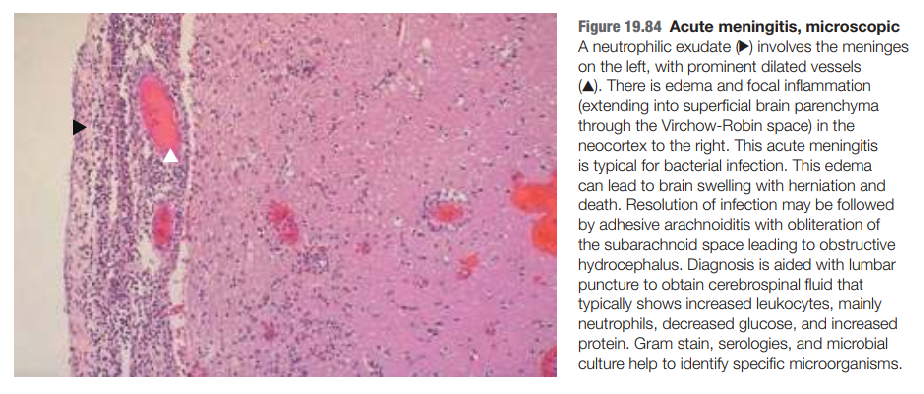
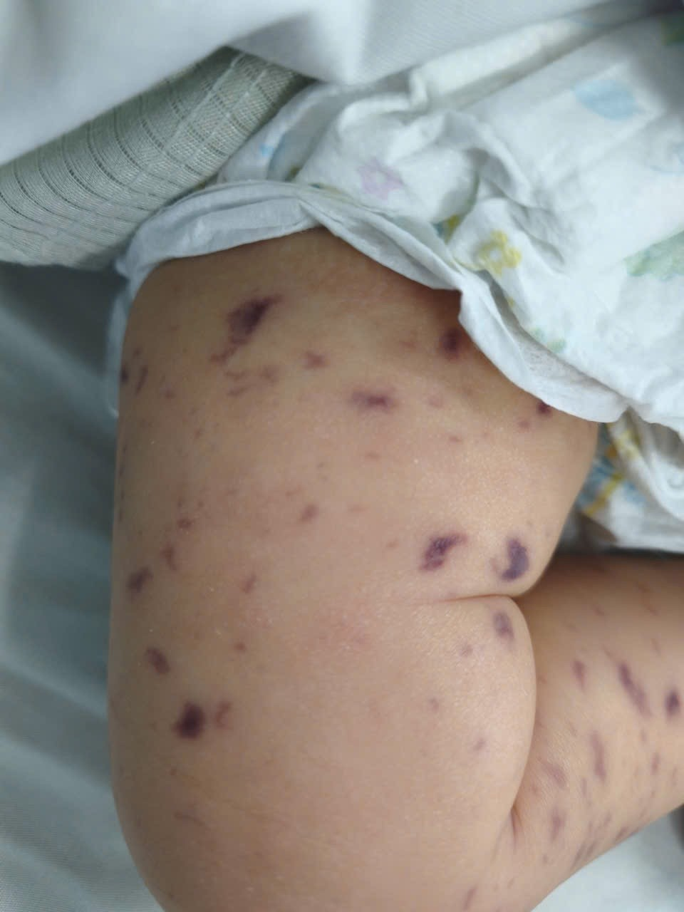
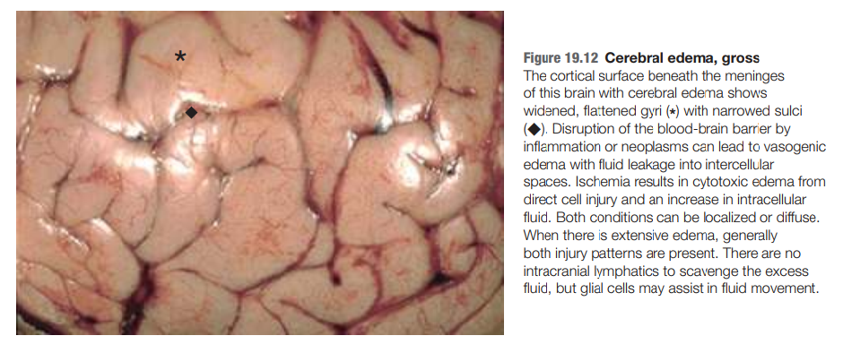
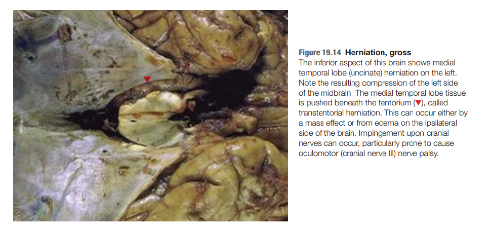
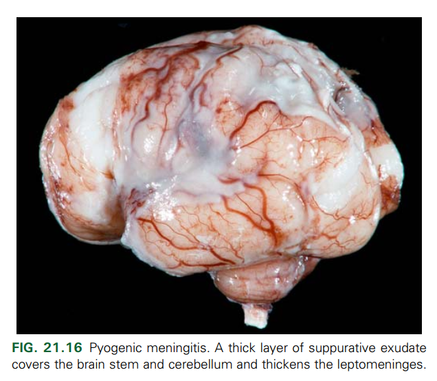
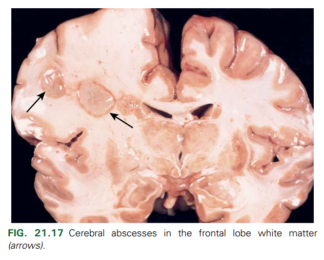

Viêm màng não do vi khuẩn
Giới thiệu
Viêm màng não do vi khuẩn là một cấp cứu nhi khoa cần được nhận biết và điều trị sớm. Triệu chứng của bệnh có thể thay đổi nhanh chóng từ sốt, lừ đừ, nôn ói sang tổn thương thần kinh không hồi phục hoặc tử vong. Trên phạm vi toàn cầu, viêm màng não vẫn là một trong những nguyên nhân gây tử vong hàng đầu ở trẻ em và để lại di chứng thần kinh ở khoảng một nửa số trẻ sống sót — bao gồm khiếm khuyết trí tuệ, rối loạn hành vi và điếc (Fitzwater et al., 2013). Tại các quốc gia thuộc vành đai viêm màng não châu Phi, tỷ lệ tử vong có thể lên đến 6,6–10,0%, và 20% người sống sót gánh chịu di chứng thần kinh vĩnh viễn (Weyori et al., 2023). Ngay cả ở những khu vực đã triển khai vắc-xin cộng hợp rộng rãi, viêm màng não vẫn được xem là "chẩn đoán không được phép bỏ sót" trong thực hành nhi khoa hiện đại (Skar et al., 2024).
Trong bài giảng này, chúng ta sẽ lần lượt trả lời những câu hỏi liên quan đến viêm màng não do vi khuẩn:
- Nguyên nhân gây bệnh là gì?
- Cơ chế bệnh sinh là gì?
- Bệnh có thường gặp không?
- Triệu chứng và dấu hiệu của bệnh là gì?
- Làm thế nào để nhận biết sớm và đưa ra chẩn đoán?
- Cần thực hiện những cận lâm sàng nào?
Nguyên nhân gây bệnh
Các tác nhân vi khuẩn thường gặp nhất gây viêm màng não mắc phải trong cộng đồng, ở mọi lứa tuổi, là Streptococcus pneumoniae, Neisseria meningitidis, và Haemophilus influenzae type b, lây truyền chủ yếu qua đường không khí (giọt bắn hô hấp trực tiếp). Ngoài ra, Tổ chức Y tế Thế giới (WHO) cũng liệt kê thêm Mycobacterium tuberculosis complex như một nguyên nhân cần cân nhắc trong bối cảnh dịch tễ phù hợp (WHO, 2026).
Bảng 1. Tác nhân vi khuẩn gây bệnh theo nhóm tuổi (Skar et al., 2024)
| Nhóm tuổi | Tác nhân thường gặp |
|---|---|
| Trẻ <3 tháng tuổi | Streptococcus agalactiae (liên cầu nhóm B), Escherichia coli, Listeria monocytogenes, Streptococcus pneumoniae |
| Trẻ >3 tháng tuổi và trẻ em | S. pneumoniae, Neisseria meningitidis, Haemophilus influenzae |
| Thanh thiếu niên | N. meningitidis, S. pneumoniae, Treponema pallidum, Neisseria gonorrhoeae |
Trẻ dưới 3 tháng tuổi có hệ miễn dịch chưa trưởng thành, chưa được tiêm chủng, và phơi nhiễm với hệ vi khuẩn từ mẹ trong quá trình sinh (Skar et al., 2024). Đây là cơ sở giải thích vì sao liên cầu nhóm B và E. coli — hai tác nhân gắn liền với đường sinh dục và đường ruột của mẹ — chiếm ưu thế ở nhóm tuổi sơ sinh, khác hẳn phổ vi khuẩn của trẻ lớn hơn.
Đường lây truyền và cơ chế bệnh sinh
Đường lây truyền của viêm màng não do vi khuẩn cần được hiểu theo hai lớp: (1) đường lây truyền vi khuẩn giữa người với người trong cộng đồng (chủ yếu qua đường hô hấp, tiếp xúc trực tiếp, hoặc trong giai đoạn chu sinh), và (2) con đường vi khuẩn xâm nhập vào hệ thần kinh trung ương sau khi đã có mặt trong cơ thể vật chủ.
Đường lây truyền giữa người với người
Bảng 2. Đặc điểm lây truyền của các tác nhân gây bệnh (WHO, 2026)
| Tác nhân | Đường lây truyền chính | Nhóm tuổi bị ảnh hưởng |
|---|---|---|
| Streptococcus pneumoniae | Qua không khí (lắng đọng trực tiếp các hạt hô hấp nhiễm khuẩn) | Mọi lứa tuổi |
| Neisseria meningitidis | Qua không khí (lắng đọng trực tiếp các hạt hô hấp nhiễm khuẩn) | Mọi lứa tuổi |
| Haemophilus influenzae type b | Qua không khí (lắng đọng trực tiếp các hạt hô hấp nhiễm khuẩn) | Trẻ <5 tuổi |
| Streptococcus agalactiae (liên cầu nhóm B) | Trong chuyển dạ (intrapartum); tiếp xúc trực tiếp | Trẻ <3 tháng tuổi |
| Escherichia coli | Trong chuyển dạ (intrapartum); tiếp xúc trực tiếp | Trẻ sơ sinh |
| Listeria monocytogenes | Qua thực phẩm (foodborne) | Trẻ sơ sinh |
| Mycobacterium tuberculosis complex | Qua không khí (lây truyền qua đường khí dung/airborne) | Mọi lứa tuổi |
Con đường vi khuẩn xâm nhập vào hệ thần kinh trung ương
Sau khi đã hiện diện trong cơ thể, vi khuẩn có thể xâm nhập vào khoang màng não bình thường vô khuẩn theo bốn con đường chính (Kaplan & Kim, 2025):
- Lan truyền theo đường máu: đây là con đường phổ biến nhất.
- Lan rộng trực tiếp từ nhiễm trùng xoang cạnh mũi, nhiễm trùng răng, hoặc vỡ nền sọ.
- Cấy ghép trực tiếp, ví dụ sau phẫu thuật hoặc đặt ốc tai điện tử (cochlear implant).
- Lan truyền hiếm gặp thứ phát từ nhiễm trùng khoang ngoài màng cứng hoặc dưới màng cứng.
Bằng chứng từ mô hình động vật về đường lây nhiễm của viêm màng não do vi khuẩn
Viêm màng não do vi khuẩn được tạo ra thực nghiệm trên động vật (chuột sơ sinh, khỉ) bằng cách nhỏ H. influenzae type b vào mũi. Kết quả cho thấy:
- Du khuẩn huyết (bacteremia) xuất hiện trước hàng giờ so với thời điểm phát hiện viêm màng não trên mô học — chứng minh viêm màng não xảy ra sau khi vi khuẩn từ ổ định cư ở mũi hầu đi vào máu.
- Bằng kỹ thuật nhuộm huỳnh quang, vi khuẩn được phát hiện bám vào thành mạch trước tiên tại các xoang tĩnh mạch dọc bên và dọc trên (sagittal), sau đó mới lan đến màng mềm (leptomeninges).
- Với liên cầu nhóm B và E. coli (qua ca lâm sàng và mô hình thực nghiệm), cửa ngõ xâm nhập lại là mao mạch não, và vi khuẩn có thể xuyên vào nhu mô não mà không cần tăng tính thấm hàng rào máu não hay có tế bào viêm đi kèm.
Cơ chế sinh bệnh học
Phần lớn các trường hợp viêm màng não do vi khuẩn phát triển qua bốn bước tuần tự (Kaplan & Kim, 2025):
- Định cư ở niêm mạc: Vi khuẩn định cư ở niêm mạc đường hô hấp trên hoặc đường tiêu hóa. Hầu hết vi khuẩn gây viêm màng não định cư ở vùng hầu họng (S. pneumoniae, N. meningitidis, H. influenzae) và đường tiêu hóa (E. coli, L. monocytogenes). Quá trình bám dính này được trung gian bởi các thành phần bề mặt tế bào vi khuẩn đặc hiệu.
- Xâm nhập vào máu: Vi khuẩn có khả năng né tránh các cơ chế đề kháng của vật chủ — thông qua vỏ polysaccharide và các yếu tố khác của vi khuẩn dẫn đến tình trạng nhiễm khuẩn huyết đạt đến một ngưỡng nhất định.
- Vượt qua hàng rào máu não: Vi khuẩn trong dòng máu sau đó vượt qua hàng rào máu não tại các mao mạch não (S. pneumoniae, N. meningitidis, E. coli K1, và liên cầu nhóm B), hoặc qua đám rối màng mạch (choroid plexus) đối với H. influenzae type b, N. meningitidis. Vi khuẩn vượt hàng rào máu não theo cơ chế xuyên tế bào, qua khe giữa các tế bào, hoặc thông qua các thực bào bị nhiễm khuẩn (cơ chế "ngựa thành Troy" ).
- Viêm màng não và não.

Ghi chú. Ảnh vi thể. ▶: dịch tiết bạch cầu đa nhân trung tính ở màng não; ▲: mạch máu dãn. Nhu mô não vỏ bên phải có phù và viêm khu trú.
Trích từ Robbins and Cotran Atlas of Pathology (4th ed., tr. 524, Hình 19.84), bởi E. C. Klatt, 2021, Elsevier. Bản quyền năm 2021 thuộc Elsevier, Inc.
Mức độ nhiễm khuẩn huyết cao là yếu tố cần thiết nhưng chưa đủ để gây viêm màng não, sự bám dính và xâm nhập đặc hiệu của vi khuẩn qua hàng rào máu não vẫn là điều kiện tiên quyết cho quá trình xâm nhập vào não.
Yếu tố nguy cơ
Một số điều kiện nền làm tăng nguy cơ mắc bệnh do các tác nhân cụ thể (WHO, 2026):
- Viêm tai giữa là nguồn nhiễm trùng thường gặp dẫn đến viêm màng não mắc phải trong cộng đồng, với S. pneumoniae là tác nhân chiếm ưu thế.
- Vô lách về giải phẫu hoặc chức năng (ví dụ bệnh hồng cầu hình liềm) làm tăng nguy cơ nhiễm trùng xâm lấn do các vi khuẩn có vỏ bọc (encapsulated bacteria) như S. pneumoniae, H. influenzae type b, và N. meningitidis.
- Tình trạng suy giảm miễn dịch làm tăng nguy cơ theo từng cơ chế riêng biệt: thiếu hụt bổ thể làm tăng nguy cơ bệnh não mô cầu xâm lấn; giảm miễn dịch dịch thể làm tăng nguy cơ bệnh phế cầu xâm lấn và viêm màng não do H. influenzae type b; tuổi dưới 1 tháng, tuổi trên 60, thai kỳ, và tình trạng suy giảm miễn dịch làm tăng nguy cơ nhiễm L. monocytogenes.
- Ở trẻ sơ sinh, các yếu tố nguy cơ cho viêm màng não do S. agalactiae và E. coli bao gồm sinh non, cân nặng lúc sinh thấp, nhiễm trùng ối và mẹ mang liên cầu nhóm B.
Dịch tễ học viêm màng não do vi khuẩn ở trẻ em
Xu hướng chung
Trên toàn cầu, viêm màng não gây tử vong cho 164.000 trẻ ngoài giai đoạn sơ sinh mỗi năm, chiếm 2% tổng tử vong ở trẻ dưới 5 tuổi vào năm 2008 (Black et al., 2010). Cập nhật năm 2010, ở trẻ sơ sinh (0–27 ngày), "sepsis hoặc viêm màng não sơ sinh" (neonatal sepsis or meningitis) là nguyên nhân tử vong đứng thứ 3 (chiếm 5,2%), chỉ sau biến chứng sinh non và biến chứng trong chuyển dạ. Ở trẻ ngoài giai đoạn sơ sinh (1–59 tháng), viêm màng não chiếm khoảng 2% tổng tử vong toàn cầu, đứng sau viêm phổi, tiêu chảy và sốt rét (Liu et al., 2012).
Tại Hoa Kỳ, theo dõi từ 1998 đến 2007 tại Mỹ cho thấy tỷ lệ mắc chung giảm 31%, từ 2,00 xuống 1,38 ca/100.000 dân. Ngược lại, tỷ lệ mắc ở trẻ dưới 2 tháng tuổi không thay đổi trong cùng giai đoạn (Kaplan & Kim, 2025) — nhóm tuổi này không hưởng lợi từ vắc-xin cộng hợp vì chưa đến tuổi tiêm chủng.
Một báo cáo dựa trên dữ liệu giám sát dân số (mã hóa ICD-9) từ 1997–2010 cho thấy tỷ lệ mắc viêm màng não do phế cầu giảm từ 0,8 ca/100.000 dân (1997) xuống 0,3 ca/100.000 dân (cuối 2010); viêm màng não do não mô cầu giảm từ 0,72 xuống 0,12 ca/100.000 dân (2010); còn viêm màng não do H. influenzae gần như không đổi ở mức 0,058 ca/100.000 dân (Kaplan & Kim, 2025).
Bảng 3. Sự thay đổi trong tỷ lệ mắc của các tác nhân gây bệnh (Kaplan & Kim, 2025)
| Tác nhân | Thay đổi tỷ lệ mắc (Mỹ, 1998–1999 so với 2006–2007) | Ghi chú |
|---|---|---|
| S. pneumoniae | Giảm 26% (từ 1,09 xuống 0,81/100.000) | Sau PCV7 (2000) và PCV13 (2010); bệnh phế cầu xâm lấn ở trẻ < 5 tuổi giảm 75% sau PCV7 và thêm 64% sau PCV13 |
| N. meningitidis | Giảm 58% (từ 0,44 xuống 0,19/100.000) | Giảm đồng đều ở mọi nhóm tuổi và nhóm huyết thanh có vắc-xin (A, C, Y, W135) |
| Liên cầu nhóm B | Tăng 4% (từ 0,24 lên 0,25/100.000) | Không thuộc mục tiêu của các vắc-xin cộng hợp trên |
| H. influenzae | Giảm 35% (từ 0,12 xuống 0,08/100.000) | Sau vắc-xin cộng hợp Hib (giới thiệu đầu thập niên 1990) |
| L. monocytogenes | Giảm 46% (từ 0,10 xuống 0,05/100.000) |
Gánh nặng bệnh vẫn cao ở khu vực thu nhập thấp/trung bình và vành đai viêm màng não châu Phi
Trái ngược với xu hướng giảm tại Mỹ, dữ liệu từ các nước đang phát triển cho thấy bệnh vẫn phổ biến và nặng nề:
- Tại vành đai viêm màng não châu Phi (26 quốc gia từ Senegal đến Ethiopia), tỷ lệ mắc trong các đợt dịch có thể lên đến 100–1.000 ca/100.000 dân, tỷ lệ tử vong từ 6,6% đến 10,0%, và 30–50% người sống sót mang di chứng thần kinh (Weyori et al., 2023).
- Trong nghiên cứu tại một bệnh viện nhi ở Chennai (Ấn Độ), tỷ lệ tử vong ghi nhận được là 26% cho viêm màng não vi khuẩn, so với 13% ở viêm màng não vô khuẩn và 5% ở nhóm không viêm màng não (Fitzwater et al., 2013).
Dịch tễ học viêm màng não do vi khuẩn ở trẻ em Việt Nam
Tỉ suất hiện mắc và tử vong
Tỉ lệ hiện mắc hàng năm của viêm màng não vi khuẩn xác định (Confirmed Bacterial Meningitis — CBM), ở trẻ dưới 5 tuổi nhập viện tại 2 bệnh viện nhi miền Nam dao động từ 4,5/100.000 (năm 2013) đến 13/100.000 (năm 2020) trong giai đoạn 2012–2021 (Truong et al., 2023). Trong cùng nghiên cứu này, trên tổng số 2.560 ca viêm màng não vi khuẩn có khả năng (Probable Bacterial Meningitis — PBM) được thu thập trong 10 năm, chỉ 158 ca (6,2%) được xác định bằng real-time PCR.
Tại một giám sát trọng điểm khác thực hiện đồng thời ở 3 bệnh viện nhi tuyến cuối (Hà Nội, TP. Hồ Chí Minh), giai đoạn 2015–2018 ghi nhận 1.803 ca PBM ở trẻ 1–59 tháng tuổi, trong đó 245 ca (13,8% trong số 1.780 ca có mẫu xét nghiệm) được xác định dương tính bằng PCR (Nguyen et al., 2024).
Tỉ lệ tử vong ca bệnh ở nhóm CBM là 8,2% (13/158 ca) trong giai đoạn 2012–2021 tại miền Nam. Theo tác nhân gây bệnh, phế cầu chiếm 92,3% số ca tử vong (12/13 ca), não mô cầu có tỉ lệ tử vong 10,0% (1/10 ca). Không ghi nhận tử vong do H. influenzae trong nhóm này. Tỉ lệ tử vong chung của toàn bộ nhóm PBM (bao gồm cả ca không xác định vi sinh) là 1,2% (Truong et al., 2023).
Đặc điểm vi sinh
Bảng 4. Phân bố tác nhân gây bệnh viêm màng não ở trẻ em Việt Nam
| Giai đoạn / Nghiên cứu | S. pneumoniae | H. influenzae | N. meningitidis | Ghi chú |
|---|---|---|---|---|
| Trước vắc-xin Hib, 1998 (cấy) | 18% | 53% | — | 34 ca cấy dương; Hib là tác nhân hàng đầu, 90% ca Hib xảy ra ở trẻ <1 tuổi |
| Trước vắc-xin Hib, 1998 (ngưng kết hạt latex) | 55% | 39% | — | 31 ca chẩn đoán bằng latex agglutination |
| 2012–2021, miền Nam | 86,1% | 7,6% | 6,3% | 158 ca CBM xác định bằng rt-PCR |
| 2015–2018, Hà Nội + TP.HCM | 92,7% | 5,3% | 2,9% | 245 ca xác định; 61,5% ca H. influenzae là týp b |
(Tran et al., 1998; Truong et al., 2023; Nguyen et al., 2024)
Tác động của vắc-xin
Vắc-xin phối hợp 5 trong 1 (bạch hầu – ho gà – uốn ván – viêm gan B – Hib) được đưa vào chương trình tiêm chủng mở rộng từ tháng 6/2010. Độ bao phủ vắc-xin Hib duy trì trên 85% trong giai đoạn 2012–2021. Tương ứng, tỉ lệ ca viêm màng não do H. influenzae trong số ca CBM giảm mạnh từ 57% (2013) xuống 5% (2017), không còn ca nào được ghi nhận trong các năm 2018, 2019 và 2021 (Truong et al., 2023).
Song song đó, tỉ lệ ca viêm màng não do phế cầu tăng từ 43% (2013) lên trên 94% trong 5 năm liên tiếp (2015–2019) và năm 2021, dù vắc-xin phế cầu (PCV10, PCV13) mới chỉ lưu hành ở khu vực dịch vụ tư nhân từ năm 2013 (PCV10, hãng GSK) và 2018 (PCV13, hãng Pfizer), chưa được đưa vào chương trình tiêm chủng quốc gia. Trong số ca CBM, chỉ 1,9% có tiền sử tiêm PCV, cho thấy độ bao phủ PCV thực tế còn rất thấp (Truong et al., 2023; Nguyen et al., 2024).
Theo dõi qua các "kỷ nguyên PCV" (trước PCV10 / PCV10 / PCV13), tỉ lệ ca viêm màng não phế cầu do serotype thuộc PCV10 giảm dần từ 96,2% xuống 76,0% rồi 57,1% (p xu hướng = 0,0032), đồng thời tỉ lệ serotype không thuộc vắc-xin tăng từ 0% lên 8,3–14,3%. Tỉ lệ di chứng ở nhóm ca do serotype PCV10 cũng giảm từ 100% xuống 66,7% rồi 0% qua các kỷ nguyên (Truong et al., 2023).
Bệnh có phổ biến không?
Xét chung, câu trả lời phụ thuộc vào bối cảnh:
- Ở các quốc gia có độ bao phủ vắc-xin cao (ví dụ Mỹ, các nước phát triển khác), viêm màng não do vi khuẩn đã trở thành bệnh tương đối hiếm so với thời kỳ trước vắc-xin, với tỷ lệ mắc chung dưới 1,5 ca/100.000 dân ở phần lớn nhóm tuổi (Kaplan & Kim, 2025).
- Ở trẻ sơ sinh/nhũ nhi nhỏ (đặc biệt dưới 2 tháng tuổi), bệnh vẫn có tỷ lệ mắc cao hơn hẳn các nhóm tuổi khác và không giảm theo thời gian dù có vắc-xin, vì nhóm này chưa được bảo vệ trực tiếp bởi chương trình tiêm chủng (Kaplan & Kim, 2025).
- Ở các khu vực thu nhập thấp/trung bình, đặc biệt vành đai viêm màng não châu Phi, bệnh vẫn phổ biến với tỷ lệ mắc mới có thể lên đến hàng trăm ca/100.000 dân trong các đợt dịch, và gánh nặng tử vong/di chứng vẫn rất cao (Weyori et al., 2023; Fitzwater et al., 2013).
Nói cách khác, viêm màng não do vi khuẩn không phải là bệnh đã "biến mất" nhờ vắc-xin, mà là bệnh có phân bố dịch tễ rất không đồng đều — giảm mạnh ở nơi có chương trình tiêm chủng tốt, nhưng vẫn là mối đe dọa lớn ở nơi chưa có điều kiện đó, và luôn là mối đe dọa cao đối với trẻ sơ sinh/nhũ nhi nhỏ ở bất kỳ đâu.
Triệu chứng và dấu hiệu
Khi tìm hiểu về triệu chứng và dấu hiệu của một bệnh, người bác sĩ thường quan tâm đến các khía cạnh:
- Căn bệnh này biểu hiện với những triệu chứng và dấu hiệu gì?
- Mỗi triệu chứng và dấu hiệu thường gặp đến mức nào?
- Bác sĩ có thể mắc phải những sai lầm nào trong quá trình nhận định các triệu chứng?
- Liệu có tổ hợp nào giúp chẩn đoán bệnh chính xác hay không?
Chúng ta sẽ tiếp cận các triệu chứng và dấu hiệu của viêm màng não do vi khuẩn theo khung câu hỏi trên.
Triệu chứng và dấu hiệu của viêm màng não do vi khuẩn
Không có một tổ hợp dấu hiệu và triệu chứng nào có thể xác định chắc chắn bệnh nhân mắc viêm màng não trên lâm sàng. Biểu hiện bệnh thay đổi đáng kể theo tuổi và tác nhân. Ở trẻ nhũ nhi, biểu hiện có thể kín đáo, không đặc hiệu, hoặc thậm chí vắng mặt hoàn toàn, trong khi ở trẻ lớn và người lớn, bộ triệu chứng kinh điển (sốt, nhức đầu, cứng gáy, thay đổi tri giác) rõ ràng hơn nhưng vẫn không hằng định.
Nếu bệnh nhân có các triệu chứng sau, đặc biệt khi xuất hiện thành tổ hợp, cần nghĩ đến viêm màng não (WHO, 2026):
- Sốt khởi phát cấp tính (≥38.0°C)
- Đau đầu
- Dấu hiệu kích thích màng não (cổ gượng, sợ ánh sáng, dấu Brudzinski, dấu Kernig)
- Thay đổi trạng thái tinh thần (lừ đừ, lú lẫn, hôn mê)
- Dấu thần kinh khu trú (mất vận ngôn, bán liệt, liệt dây thần kinh sọ)
- Co giật khu trú hoặc toàn thể mới khởi phát.
Ở trẻ sơ sinh và nhũ nhi, triệu chứng viêm màng não ít đặc hiệu hơn; bao gồm (Hoen et al., 2019; WHO, 2026):
- Sốt, hạ thân nhiệt
- Li bì, kích thích, ánh mắt nhìn đờ đẫn, vô hồn
- Tiếng khóc bất thường (khóc than vãn, rên rỉ, khóc dỗ không nín, âm sắc cao liên tục)
- Bú kém, bỏ bú
- Nôn, tiêu chảy
- Dấu hiệu suy hô hấp (thở nhanh, rút lõm lồng ngực, thở rên)
- Co giật
- Thóp phồng
- Giảm trương lực cơ.
Tăng áp lực nội sọ có thể xảy ra ở một số bệnh nhân viêm màng não cấp, do phù não nặng, não úng thủy tắc nghẽn, hoặc tổn thương choán chỗ (áp-xe não, mủ dưới màng cứng). Các dấu hiệu và triệu chứng của tăng áp lực nội sọ bao gồm: đau đầu dữ dội, nôn, suy giảm trạng thái ý thức, tổn thương thần kinh sọ, phù gai thị, hoặc tam chứng Cushing (chậm nhịp tim, suy hô hấp và tăng huyết áp) (WHO, 2026).
Ngoài ra, ban xuất huyết không mất khi ấn là một dấu chứng điển hình gợi ý tác nhân não mô cầu. Ban có thể là dạng chấm xuất huyết (petechiae) hoặc mảng xuất huyết (purpura); xuất hiện ở thân mình, hai chi dưới, niêm mạc, và ít gặp hơn là ở lòng bàn tay, lòng bàn chân; ban có thể xuất hiện đột ngột hoặc tiến triển dần dần (WHO, 2026).

Ảnh của tác giả, đã có sự đồng ý của gia đình và đã ẩn danh.
Bảng 5. Tần suất các dấu hiệu/triệu chứng theo nhóm tuổi (Kaplan & Kim, 2025)
| Dấu hiệu | Trẻ nhũ nhi | Trẻ em | Người lớn |
|---|---|---|---|
| Rối loạn nền tảng có sẵn | 27–32% | 10–21% | 53–92% |
| Nhức đầu | Không có số liệu | 15–92% | 31–87% |
| Sốt | 34–98% | 88–97% | 42–97% |
| Cứng gáy | 9–54% | 40–80% | 50–88% |
| Thóp phồng | 14–42% | Không áp dụng | Không áp dụng |
| Thay đổi tri giác | 34–79% | 53–83% | 32–91% |
| Hôn mê | 1–40% | 7–11% | 11–19% |
| Co giật | 16–62% | 19–41% | 5–21% |
| Dấu thần kinh khu trú | 4–16% | 8–34% | 10–42% |
| Liệt dây thần kinh sọ | 10% | Không có số liệu | 10–21% |
| Điếc | Không có số liệu | 23–34% | 9% |
Bảng 6. Triệu chứng và phiên giải lâm sàng
| Dấu hiệu | Ý nghĩa / cơ chế sinh lý bệnh | Tần suất / giá trị chẩn đoán | Lưu ý lâm sàng |
|---|---|---|---|
| Sốt | Phản ánh đáp ứng viêm hệ thống với nhiễm trùng; là dấu hiệu thường gặp nhất | Tần suất 34–98% ở trẻ nhũ nhi, 88–97% ở trẻ em | Không sốt không loại trừ được bệnh. Dù ít gặp, vắng sốt ở bệnh nhân có dấu hiệu viêm màng não vẫn là điều bình thường có thể xảy ra (Kaplan & Kim, 2025); một số trẻ dưới 3 tuổi bị viêm màng não do vi khuẩn không sốt (He et al., 2023). WHO (2026) cũng cảnh báo người suy giảm miễn dịch hoặc ở các cực tuổi có thể không sốt. |
| Cứng gáy | Phản xạ co cơ để hạn chế đau khi màng não bị viêm, viêm rễ dây thần kinh cảm giác hoặc biến dạng rễ thần kinh liên quan tăng áp lực nội sọ (Kaplan & Kim, 2025) | Tần suất chỉ 9–54% ở trẻ nhũ nhi, so với 40–80% ở trẻ em; thậm chí chỉ 6% trong một nghiên cứu ở Ấn Độ (Fitzwater et al., 2013) | Hiếm gặp và có thể hoàn toàn vắng mặt ở trẻ nhũ nhi (WHO, 2026). Có thể không khám được ở bệnh nhân hôn mê hoặc có khiếm khuyết thần kinh. |
| Dấu Kernig, Brudzinski | Phản xạ co cơ để hạn chế đau khi màng não bị viêm, viêm rễ dây thần kinh cảm giác hoặc biến dạng rễ thần kinh liên quan tăng áp lực nội sọ (Kaplan & Kim, 2025) | Có độ nhạy và độ đặc hiệu hạn chế (Davis, 2018); độ nhạy kém, đặc biệt ở trẻ nhũ nhi | Không dùng để loại trừ bệnh, đặc biệt ở trẻ nhỏ. Có thể âm tính giả khi bệnh nhân hôn mê. |
| Dấu hiệu kích thích màng não nói chung | Tổ hợp cứng gáy + Kernig/Brudzinski, phản ánh viêm màng não thực thể | Hiện diện ở 75% trẻ viêm màng não do vi khuẩn lúc nhập viện trong một nghiên cứu hồi cứu; nhưng trong nghiên cứu khác trên 326 trẻ tại Hà Lan, chỉ 30% trẻ có dấu hiệu này thực sự là viêm màng não do vi khuẩn — tức giá trị tiên đoán dương thấp (Kaplan & Kim, 2025) | Vừa không nhạy vừa không đặc hiệu. Vắng mặt phổ biến hơn đáng kể ở trẻ dưới 12 tháng tuổi (Kaplan & Kim, 2025) |
| Thóp phồng | Phản ánh tăng áp lực nội sọ ở trẻ còn thóp mở | Tần suất 14–42% ở trẻ nhũ nhi viêm màng não do vi khuẩn; giá trị tiên đoán dương chỉ 0,3% ở trẻ sốt có thóp phồng (Takagi et al., 2021) | Độ nhạy và độ đặc hiệu rất thấp khi đứng riêng lẻ. Đa số nguyên nhân gây thóp phồng ở trẻ sốt là bệnh tự giới hạn. Không trẻ nào có tổng trạng "tỉnh táo/khá" có thóp phồng lại bị viêm màng não do vi khuẩn trong nghiên cứu của Takagi et al. (2021) — toàn trạng khi khám quan trọng hơn bản thân dấu hiệu thóp phồng. |
| Phù gai thị | Biểu hiện muộn của tăng áp lực nội sọ | Hiếm gặp trong viêm màng não cấp, do thời gian tăng áp lực còn ngắn tại thời điểm chẩn đoán (Kaplan & Kim, 2025) | Không nên trông chờ dấu hiệu này để nghĩ đến tăng áp lực nội sọ ở giai đoạn cấp; nếu có dấu hiệu này cần nghĩ đến tắc xoang tĩnh mạch, tràn mủ dưới màng cứng hoặc áp xe não (Kaplan & Kim, 2025). |
| Thay đổi trạng thái ý thức | Phản ánh viêm nhu mô não/tăng áp lực nội sọ lan tỏa | Tần suất 34–79% ở trẻ nhũ nhi, 53–83% ở trẻ em; tăng nguy cơ viêm màng não do vi khuẩn có ý nghĩa thống kê (Weyori et al., 2023; Kaplan & Kim, 2025) | Là một trong các dấu hiệu dự đoán có ý nghĩa viêm màng não do vi khuẩn so với nhóm nghi ngờ lâm sàng (Fitzwater et al., 2013). |
| Dấu thần kinh khu trú | Có thể do huyết khối tĩnh mạch màng não, viêm mạch tắc nghẽn, hoại tử vỏ não | Tần suất 4–16% trẻ nhũ nhi, 8–34% trẻ em (Kaplan & Kim, 2025) | Có giá trị tiên lượng nặng liên quan khám thần kinh bất thường kéo dài tại các mốc 1, 3, 6 tháng và tại 1 năm, cũng như chậm phát triển sau xuất viện (Kaplan & Kim, 2025) |
| Co giật | Phản ánh rối loạn điện giải/màng tế bào thần kinh do viêm | Xảy ra ở ~20% trước nhập viện, thêm ~26% trong 1–2 ngày đầu nằm viện (Kaplan & Kim, 2025); tần suất co giật với phế cầu/H. influenzae gấp đôi so với não mô cầu; trong nghiên cứu Ấn Độ, co giật lại phổ biến hơn ở nhóm chỉ nghi ngờ lâm sàng (91%) so với nhóm viêm màng não do vi khuẩn xác định (80%, p<0,05) (Fitzwater et al., 2013) | Không đặc hiệu — dễ gây "báo động giả". Co giật xuất hiện sớm (trước/trong vài ngày đầu nằm viện) thường không có ý nghĩa tiên lượng riêng biệt. Ngược lại, co giật khó kiểm soát hoặc kéo dài quá ngày nằm viện thứ 4, cũng như co giật khởi phát lần đầu muộn trong đợt bệnh, mới là dấu hiệu đáng lo ngại, liên quan di chứng vĩnh viễn. Trẻ co giật khu trú có nguy cơ mắc di chứng cao hơn so với trẻ co giật toàn thể (Kaplan & Kim, 2025). |
| Ban xuất huyết/tử ban (petechiae/purpura) | Phản ánh viêm mạch máu và đông máu nội mạch lan tỏa, đặc trưng cho não mô cầu huyết | Gặp ở khoảng 50% bệnh nhân viêm màng não do não mô cầu (Kaplan & Kim, 2025), là ban không mất khi ấn (non-blanching) | Không đặc hiệu tuyệt đối cho não mô cầu — có thể gặp trong bất kỳ bệnh lý viêm mạch máu nào. Khi xuất hiện cùng sốc và hạ thân nhiệt là dấu hiệu tiên lượng xấu, cần xử trí khẩn cấp (Kaplan & Kim, 2025). |
| Sốc tuần hoàn | Diễn ra khi nhiễm khuẩn huyết nặng, phổ biến nhất ở trẻ nhiễm não mô cầu huyết tối cấp | Gặp ở 3,8% trẻ viêm màng não do não mô cầu và 5,5% trẻ viêm màng não do H. influenzae trong một nghiên cứu (Kaplan & Kim, 2025) | Là dấu hiệu báo động đỏ cần can thiệp cấp cứu ngay. |
Chúng ta có thể rút ra những nhận xét gì?
- Không có "bằng chứng vắng mặt" trong lâm sàng viêm màng não. Vắng cứng gáy, vắng thóp phồng, vắng sốt, hay thậm chí vắng toàn bộ dấu hiệu kích thích màng não đều không loại trừ được chẩn đoán — đặc biệt ở trẻ nhũ nhi.
- Tuổi càng nhỏ, dấu hiệu kinh điển càng kém tin cậy. Khoảng cách giữa trẻ nhũ nhi và trẻ em/người lớn là rất lớn đối với hầu hết các dấu hiệu (đặc biệt cứng gáy, nhức đầu) — do đó cần giữ ngưỡng nghi ngờ thấp ở nhóm tuổi này.
- Một số dấu hiệu tuy không giúp chẩn đoán nhưng lại có giá trị tiên lượng — dấu thần kinh khu trú và co giật muộn là ví dụ điển hình: chúng không đặc hiệu để "chẩn đoán có bệnh hay không", nhưng khi đã có chẩn đoán, sự xuất hiện của chúng báo hiệu nguy cơ di chứng cao hơn.
Đánh giá trạng thái ý thức ở trẻ viêm màng não do vi khuẩn
Có một số lý do chính khiến trạng thái ý thức trở thành một dấu hiệu bắt buộc phải theo dõi chặt chẽ, xuyên suốt trong toàn bộ quá trình điều trị:
Thứ nhất, đây là biểu hiện trực tiếp của quá trình viêm và tăng áp lực nội sọ. Thay đổi tri giác (từ kích thích, lú lẫn đến hôn mê) là hậu quả của quá trình viêm màng não/viêm não và tăng áp lực nội sọ đi kèm.
Thứ hai, mức độ ý thức quyết định có cần chụp cắt lớp vi tính sọ não trước khi chọc dò thắt lưng hay không. WHO (2026) liệt kê điểm Glasgow < 10 là một trong các tiêu chí chống chỉ định tương đối, cần chẩn đoán hình ảnh sọ não trước khi chọc dò thắt lưng để loại trừ tổn thương choán chỗ, não úng thủy tắc nghẽn, hoặc phù não nặng có lệch đường giữa.
Thứ ba, thay đổi tri giác có giá trị tiên lượng. Theo Kaplan và Kim (2025), sự hiện diện của dấu thần kinh khu trú (thường đi kèm với thay đổi tri giác) tại thời điểm nhập viện có liên quan đến khám thần kinh bất thường kéo dài sau 1, 3, 6 tháng và chậm phát triển sau 1 năm. Ngoài ra, thay đổi tri giác cũng là một trong các yếu tố làm tăng nguy cơ có ý nghĩa thống kê đối với chẩn đoán viêm màng não do vi khuẩn trong phân tích đa biến (AOR = 1,338; KTC 95%: 1,083–1,652) (Weyori et al., 2023).
Hai công cụ đánh giá được WHO khuyến cáo sử dụng song song để đánh giá trạng thái ý thức là thang điểm Glasgow (Glasgow Coma Scale, GCS) và thang AVPU — mỗi công cụ phù hợp với một bối cảnh sử dụng khác nhau.
Thang AVPU
AVPU là một công cụ đánh giá đơn giản hóa mức độ ý thức thông qua đáp ứng với kích thích, gồm 4 mức:
- A (Alert) — tỉnh táo hoàn toàn, tương tác được (dù chưa chắc định hướng đầy đủ)
- V (Voice) — chưa tỉnh táo hoàn toàn trước kích thích (có thể nhắm mắt hoặc có vẻ buồn ngủ), nhưng đáp ứng được với lời nói mà không cần chạm vào
- P (Pain) — không đáp ứng với lời nói, nhưng đáp ứng với kích thích đau (ở trẻ em: kích thích tại đế bàn chân; ở người lớn: chà xương ức)
- U (Unresponsive) — không có bất kỳ vận động hay đáp ứng lời nói nào với kích thích đau.
WHO (2026) nhấn mạnh: thang AVPU đặc biệt hữu ích ở trẻ em và trẻ nhũ nhi, và với bất kỳ bệnh nhân nào ở mức P hoặc U, cần can thiệp khẩn cấp để bảo vệ đường thở và đảm bảo hô hấp.
Thang điểm tiên đoán viêm màng não do vi khuẩn
Khi đối mặt với một ca bệnh nghi ngờ viêm màng não do vi khuẩn, bài toán đặt ra cho bác sĩ là phải cân bằng hai rủi ro đối lập:
- Bỏ sót một ca viêm màng não do vi khuẩn thật sự — hậu quả có thể là tử vong hoặc di chứng thần kinh vĩnh viễn nếu trì hoãn kháng sinh.
- Điều trị quá mức cho trẻ chỉ bị viêm màng não vô khuẩn — dẫn đến kháng sinh không cần thiết, tăng độc tính, tăng chi phí, nằm viện kéo dài.
Tuy nhiên, không có một dấu hiệu/triệu chứng đơn lẻ nào đủ nhạy và đặc hiệu để chẩn đoán hoặc loại trừ viêm màng não do vi khuẩn. Do đó, nhiều tác giả đã cố gắng kết hợp nhiều biến số lâm sàng và cận lâm sàng thành các thang điểm dự đoán (clinical prediction rules, CPR) nhằm hỗ trợ quyết định lâm sàng. Trong số các thang điểm, Bacterial Meningitis Score (BMS) là phương pháp có chất lượng tốt nhất và đã được nghiên cứu rộng rãi.
| Hạng mục | Nội dung |
|---|---|
| Tác giả / năm phát triển | Nigrovic, Kuppermann, & Malley (2002) |
| Mục đích | Phân biệt viêm màng não do vi khuẩn với viêm màng não vô khuẩn ở trẻ đã có tăng bạch cầu trong dịch não tủy, nhằm xác định nhóm nguy cơ rất thấp có thể không cần nhập viện/kháng sinh tĩnh mạch |
| Bối cảnh sử dụng | BMS không phải là công cụ chẩn đoán ban đầu — BMS chỉ được áp dụng sau khi đã chọc dò thắt lưng và có kết quả dịch não tủy cho thấy tăng bạch cầu (pleocytosis). Câu hỏi lâm sàng mà BMS trả lời là: "Trẻ này đã có tăng bạch cầu trong dịch não tủy — vậy trẻ có thuộc nhóm nguy cơ rất thấp bị viêm màng não do vi khuẩn hay không, để cân nhắc theo dõi ngoại trú/không dùng kháng sinh tĩnh mạch ngay, thay vì mặc định nhập viện và điều trị kháng sinh cho mọi trẻ có tăng bạch cầu dịch não tủy?" |
| Dân số áp dụng | Trẻ 29 ngày – 19 tuổi, có tăng bạch cầu dịch não tuỷ |
| Biến số | Điểm |
|---|---|
| Nhuộm Gram DNT dương tính | 2 |
| Protein DNT ≥ 80 mg/dL | 1 |
| Bạch cầu trung tính tuyệt đối trong DNT ≥ 1.000/mm³ | 1 |
| Bạch cầu trung tính tuyệt đối trong máu ngoại vi ≥ 10.000/mm³ | 1 |
| Co giật tại thời điểm hoặc trước khi nhập viện | 1 |
| BMS | Nguy cơ VMNVK | Hướng xử trí |
|---|---|---|
| = 0 | Rất thấp (2,1%, Tuerlinckx et al., 2012) | Có thể chỉ cần điều trị hỗ trợ nếu đồng thời: khám lâm sàng ổn định, triệu chứng cải thiện sau chọc dò/hạ sốt-giảm đau-bù dịch, không nghi ngờ viêm màng não do ve cắn (Lyme), và đảm bảo tái khám được [nguồn cần xác nhận]. Nếu không đủ điều kiện trên, quyết định dùng kháng sinh được cá thể hóa. |
| ≥ 1 | Không thấp | Kháng sinh theo kinh nghiệm được chỉ định trong hầu hết trường hợp. |
Lưu ý quan trọng: BMS = 0 không loại trừ hoàn toàn VMNVK và không nên dùng đơn độc để quyết định xuất viện khi chưa có kết quả cấy DNT (Tuerlinckx et al., 2012). Đến nay, chưa có thang điểm tiên đoán lâm sàng nào (kể cả BMS) đạt đủ chất lượng phương pháp luận và thẩm định tiến cứu để khuyến cáo áp dụng thường quy; BMS hiện là ứng viên có hiệu năng tốt nhất nhưng cần thận trọng khi dùng trên lâm sàng (Kulik et al., 2013).
Cận lâm sàng
Không có xét nghiệm đơn lẻ nào đủ để chẩn đoán xác định viêm màng não do vi khuẩn — quy trình luôn kết hợp: (1) xét nghiệm dịch não tủy qua chọc dò thắt lưng, (2) xét nghiệm máu hỗ trợ, (3) chẩn đoán hình ảnh sọ não khi có chỉ định, và (4) các dấu ấn sinh học hỗ trợ khi bệnh cảnh dịch não tủy không điển hình. Cấy dịch não tủy vẫn là tiêu chuẩn vàng kinh điển, nhưng PCR ngày càng được công nhận ngang hàng, đặc biệt khi trẻ đã dùng kháng sinh trước chọc dò.
Chọc dò thắt lưng (Lumbar puncture)
Chọc dò thắt lưng nên được thực hiện càng sớm càng tốt sau khi thăm khám lâm sàng đầy đủ, trừ khi có chống chỉ định cụ thể, và cần do nhân viên y tế đã qua đào tạo thực hiện trong điều kiện vô khuẩn. Ba ống dịch não tủy (mỗi ống ≥ 1 mL) nên được thu thập để phục vụ: đếm tế bào, sinh hóa, vi sinh (nhuộm Gram, cấy), xét nghiệm phân tử (PCR) khi có sẵn. Nếu chỉ có một ống, ưu tiên xét nghiệm vi sinh (WHO, 2026).
Một số bệnh nhân có nguy cơ thoát vị não khi chọc dò thắt lưng trong bối cảnh tăng áp lực nội sọ do tổn thương choán chỗ. WHO (2026) liệt kê các tiêu chí lâm sàng cần chụp cắt lớp vi tính (Computed Tomography - CT) sọ não trước khi chọc dò:
- Điểm Glasgow Coma Scale (GCS) <10
- Dấu thần kinh khu trú
- Liệt dây thần kinh sọ
- Phù gai thị
- Co giật mới khởi phát (ở người lớn)
- Tình trạng suy giảm miễn dịch nặng.
Xét nghiệm dịch não tủy tối thiểu bao gồm: đếm bạch cầu (kèm công thức bạch cầu), protein, glucose (đối chiếu với glucose máu lấy đồng thời), và cấy vi khuẩn. Một số trung tâm bổ sung định lượng lactate dịch não tủy tùy điều kiện.
Đặc điểm tế bào học và sinh hoá
Ở trẻ ≥ 3 tháng tuổi, số lượng bạch cầu bình thường dưới 5 bạch cầu/mm³ (Hoen et al., 2019); 95% trẻ trên 3 tháng tuổi không có bạch cầu đa nhân trung tính trong dịch não tủy — sự hiện diện của dù chỉ 1 bạch cầu đa nhân trung tính cũng được xem là bất thường và cần theo dõi sát (Kaplan & Kim, 2025). Cần lưu ý rằng, viêm màng não do vi khuẩn đã được cấy xác định vẫn có thể xảy ra dù dịch não tủy KHÔNG có tăng bạch cầu (pleocytosis). Đây là tình trạng hiếm nhưng đã được ghi nhận nên không được loại trừ chẩn đoán chỉ vì tế bào dịch não tủy bình thường.
Bảng 7. Đặc điểm dịch não tuỷ theo tác nhân gây bệnh (WHO, 2026)
| Thông số | Bình thường | Viêm màng não vi khuẩn | Viêm màng não virus | Viêm màng não do lao | Viêm màng não do nấm |
|---|---|---|---|---|---|
| Màu sắc | Trong | Đục, mủ | Trong | Trong | Trong |
| Bạch cầu (WBC) | < 5/mm³ | Tăng rất nhiều | Tăng/rất tăng | Tăng/rất tăng | Bình thường/tăng |
| Tế bào ưu thế | – | Đa nhân trung tính | Lympho | Lympho | Lympho |
| Tỷ lệ glucose DNT/máu | 0,4–0,7 | Giảm rất nhiều | Bình thường | Giảm | Bình thường/giảm |
| Glucose | 40–70 mg/dL (2,2–3,9 mmol/L) | Giảm rất nhiều | Bình thường | Giảm rất nhiều | Bình thường/giảm |
| Protein toàn phần | 15-45 mg/dL (0.15-0.45 g/L) | Tăng rất nhiều | Bình thường/tăng | Tăng | Bình thường/tăng |
Ở trẻ sơ sinh có ngưỡng giá trị dịch não tuỷ khác biệt so với trẻ lớn: gợi ý viêm màng não do vi khuẩn khi bạch cầu dịch não tuỷ > 15 tế bào/mm³, protein dịch não tuỷ > 100 mg/dL, hoặc glucose dịch não tuỷ < 30 mg/dL (WHO, 2026).
Tổng số tế bào (bạch cầu dịch não tủy)
-
Giá trị chẩn đoán. Trong viêm màng não do vi khuẩn, số lượng bạch cầu thường tăng nhiều, từ vài trăm đến trên 10.000 tế bào trên mỗi mm³, dù đôi khi có thể dưới 100 tế bào, đặc biệt trong viêm màng não do não mô cầu hoặc giai đoạn rất sớm của bệnh (Kaplan & Kim, 2025). Bản thân tổng số tế bào không đặc hiệu cho căn nguyên vi khuẩn, vì viêm màng não do virus, do lao và do nấm cũng có thể gây tăng bạch cầu dịch não tủy ở các mức độ khác nhau (WHO, 2026). Một điểm cần lưu ý là viêm màng não do vi khuẩn đã được xác định qua cấy bệnh phẩm vẫn có thể xảy ra dù dịch não tủy không có tăng bạch cầu; do đó dù hiếm gặp, không nên loại trừ chẩn đoán chỉ dựa vào tổng số tế bào bình thường (Kaplan & Kim, 2025).
-
Giá trị theo dõi cải thiện bệnh. Dữ liệu từ các nghiên cứu chọc dò thắt lưng lặp lại vào cuối đợt điều trị cho thấy số lượng bạch cầu và nồng độ protein trong dịch não tủy thường chưa trở về hoàn toàn bình thường ngay cả khi bệnh nhân đã đáp ứng lâm sàng tốt, cho thấy sự cải thiện tế bào học diễn ra chậm hơn cải thiện lâm sàng (Kaplan & Kim, 2025). Đối với các trường hợp nhiễm phế cầu kháng thuốc hoặc vi khuẩn kháng kháng sinh, chọc dò thắt lưng lặp lại được khuyến cáo thực hiện ở 48 đến 72 giờ để xác nhận tình trạng tiệt trùng dịch não tủy. Nếu cải thiện lâm sàng chậm hơn dự kiến hoặc không rõ ràng, việc chọc dò lặp lại có thể được thực hiện ở bất kỳ thời điểm nào (Kaplan & Kim, 2025).
Công thức tế bào (tỷ lệ đa nhân trung tính so với lympho)
-
Giá trị chẩn đoán. Viêm màng não do vi khuẩn đặc trưng bởi bạch cầu đa nhân trung tính chiếm ưu thế, trong khi viêm màng não do virus, do lao và do nấm đặc trưng bởi lympho chiếm ưu thế, trừ giai đoạn rất sớm của viêm màng não do lao khi đa nhân trung tính có thể chiếm đến 80% số tế bào (Kaplan & Kim, 2025; WHO, 2026).
-
Giá trị theo dõi cải thiện bệnh. Nếu chọc dò thắt lưng được thực hiện vào cuối đợt điều trị, việc điều trị lại là bắt buộc nếu vẫn soi cấy vi khuẩn dương tính hoặc nếu hơn 30% số tế bào vẫn là bạch cầu đa nhân trung tính (Kaplan & Kim, 2025).
Protein dịch não tủy
-
Giá trị chẩn đoán. Protein dịch não tủy bình thường ở mức 15 đến 45 mg/dL, tương đương 0,15 đến 0,45 g/L. Trong viêm màng não do vi khuẩn, protein thường tăng nhiều, ở mức 100 đến 500 mg/dL, đôi khi trên 1.000 mg/dL (Kaplan & Kim, 2025). Protein cũng tăng trong viêm màng não do lao (gần như luôn tăng, thường 100 đến 200 mg/dL, có thể cao hơn nếu có tắc nghẽn dòng chảy dịch não tủy) và có thể tăng nhẹ trong viêm màng não do virus. Điều này khiến bản thân protein không đặc hiệu cho căn nguyên vi khuẩn khi xét đơn lẻ (Kaplan & Kim, 2025; WHO, 2026).
-
Giá trị theo dõi cải thiện bệnh. Protein dịch não tủy, tương tự tổng số tế bào, thường chưa trở về bình thường hoàn toàn ngay cả khi đáp ứng lâm sàng đã tốt, phản ánh quá trình phục hồi hàng rào máu não diễn ra chậm hơn cải thiện triệu chứng (Kaplan & Kim, 2025).
Glucose dịch não tủy (và tỷ lệ glucose dịch não tủy trên máu)
-
Giá trị chẩn đoán. Glucose dịch não tủy bình thường ở mức 40 đến 70 mg/dL, với tỷ lệ đường dịch não tủy trên máu bình thường từ 0,4 đến 0,7 (WHO, 2026). Trong viêm màng não do vi khuẩn, glucose thường giảm nhiều, dưới 40 mg/dL ở hơn một nửa số ca, do vi khuẩn tiêu thụ glucose và giảm vận chuyển glucose qua màng não viêm (Kaplan & Kim, 2025). Glucose cũng giảm trong viêm màng não do lao và do nấm, nhưng thường bình thường trong viêm màng não do virus — đây là một điểm phân biệt tương đối hữu ích, dù không tuyệt đối, giữa vi khuẩn và virus (WHO, 2026).
-
Giá trị theo dõi cải thiện bệnh. Nếu có chọc dò thắt lưng được thực hiện vào cuối đợt điều trị, việc điều trị lại có thể được cân nhắc nếu glucose dịch não tủy dưới 20 mg/dL và tỷ lệ đường dịch não tủy trên máu dưới 20% tại thời điểm đó (Kaplan & Kim, 2025).
Lactate dịch não tủy
-
Giá trị chẩn đoán. Trong số các thành phần được xem xét, lactate dịch não tủy có bằng chứng định lượng mạnh nhất về khả năng phân biệt căn nguyên vi khuẩn với virus. Một nghiên cứu tại Ấn Độ trên trẻ có biểu hiện lâm sàng phù hợp viêm màng não ghi nhận, ở ngưỡng cắt 3 mmol/L, lactate dịch não tủy đạt độ nhạy 0,90, độ đặc hiệu 1,0, giá trị tiên đoán dương 1,0, giá trị tiên đoán âm 0,963, độ chính xác 0,972, tỷ số khả dĩ dương 23,6 và tỷ số khả dĩ âm 0,1; diện tích dưới đường cong khi so sánh viêm màng não do vi khuẩn với viêm màng não do virus đạt 0,979 (Nazir et al., 2018). Nhóm tác giả kết luận nồng độ lactate trung bình ở nhóm viêm màng não do virus vẫn ở dưới 2 mmol/L, trong khi lactate ở ngưỡng 3 mmol/L có độ chính xác chẩn đoán cao cho viêm màng não do vi khuẩn (Nazir et al., 2018).
-
Một nghiên cứu khác tại Brazil đánh giá lactate dịch não tủy phối hợp với thang điểm Bacterial Meningitis Score, sử dụng ngưỡng lactate 30 mg/dL (tương đương khoảng 3,3 mmol/L). Khi phối hợp thang điểm Bacterial Meningitis Score từ 1 điểm trở lên với lactate dịch não tủy từ 30 mg/dL trở lên, độ nhạy đạt 100%, độ đặc hiệu đạt 98,5%, giá trị tiên đoán âm đạt 100% — cao hơn rõ rệt so với chỉ dùng thang điểm đơn thuần ở ngưỡng 1 điểm, vốn chỉ đạt độ đặc hiệu 64,2% dù độ nhạy cũng đạt 100% (Pires et al., 2017).
-
Nồng độ lactate dịch não tủy trong viêm màng não do vi khuẩn nhìn chung cao hơn viêm màng não vô khuẩn, nhưng không phải luôn đúng trên từng cá thể. Một số bệnh nhân viêm màng não vô khuẩn có lactate nằm trong khoảng thường gặp ở nhiễm vi khuẩn, trong khi một số bệnh nhân viêm màng não do vi khuẩn lại có lactate không tăng cao. Do đó, nồng độ lactate dịch não tủy không thể dùng một cách đáng tin cậy để phân biệt căn nguyên vi khuẩn với virus trên từng bệnh nhân cá thể, dù cho kết quả tốt ở cấp độ quần thể nghiên cứu (Kaplan & Kim, 2025).
-
WHO (2026) lưu ý rằng, nồng độ lactate dịch não tủy có thể giúp phân biệt viêm màng não do vi khuẩn với viêm màng não do virus khi được đo trước khi bắt đầu dùng kháng sinh. Tuy nhiên, giá trị của lactate dịch não tủy bị hạn chế một khi đã bắt đầu dùng kháng sinh hoặc khi có các bệnh lý thần kinh trung ương khác đi kèm. Ngoài ra, các yếu tố khác như thiếu oxy mô não, nhồi máu não, đường phân kị khí và chuyển hoá của bạch cầu dịch não tuỷ cũng có thể làm tăng nồng độ lactate (Kaplan & Kim, 2025).
-
Giá trị theo dõi cải thiện bệnh. Nồng độ lactate dịch não tủy có xu hướng song hành với mức độ đáp ứng tế bào học của dịch não tủy, gợi ý lactate có thể phản ánh gián tiếp diễn tiến viêm màng não theo thời gian, dù các nguồn tài liệu hiện có không cung cấp dữ liệu theo dõi lactate theo thời gian điều trị một cách hệ thống (Kaplan & Kim, 2025).
Nhuộm Gram và cấy dịch não tuỷ
Nhuộm Gram dịch não tuỷ cần được thực hiện ở mọi ca nghi ngờ (WHO, 2026). Độ nhạy phụ thuộc mật độ vi khuẩn trong dịch: 25% dương tính nếu mật độ <10³ CFU/mL, 60% nếu 10³–10⁵ CFU/mL, và 97% nếu >10⁵ CFU/mL. Theo tác nhân: phế cầu 75–85%, não mô cầu ~80%, trực khuẩn Gram âm 50%, Listeria ~33% (Kaplan & Kim, 2025).
Cấy dịch não tuỷ được xem là "tiêu chuẩn vàng" với độ nhạy 70–85% ở trẻ chưa dùng kháng sinh trước đó, giảm còn khoảng 78% sau khi đã dùng kháng sinh; thời gian trả kết quả thường 24–72 giờ (Kaplan & Kim, 2025). Kháng sinh dùng trước chọc dò làm giảm rõ rệt tỷ lệ cấy và nhuộm Gram dương tính, nhưng hầu như không làm thay đổi đáng kể các thông số sinh hóa-tế bào dịch não tuỷ khác (Kaplan & Kim, 2025). N. meningitidis có thể bị tiệt trùng hoàn toàn trong dịch não tuỷ chỉ sau 2 giờ dùng cephalosporin thế hệ 3; S. pneumoniae bắt đầu bị tiệt trùng sau 4 giờ (Kaplan & Kim, 2025). Do đó, không nên loại trừ viêm màng não do vi khuẩn chỉ vì cấy âm tính ở bệnh nhân đã dùng kháng sinh trước chọc dò.
PCR (Polymerase Chain Reaction) dịch não tuỷ
PCR khuếch đại DNA của vi khuẩn trong dịch não tủy, với các mồi đặc hiệu có sẵn cho S. pneumoniae, N. meningitidis và H. influenzae týp b, cho phép phát hiện đồng thời nhiều tác nhân trong một lần xét nghiệm. Phản ứng khuếch đại chuỗi gen có thể phát hiện được lượng DNA rất nhỏ, ví dụ chỉ 2 bản sao của E. coli, S. pneumoniae, N. meningitidis;toàn bộ quy trình từ tách chiết DNA đến khi có kết quả chỉ mất khoảng một tiếng rưỡi (Kaplan & Kim, 2025).
Ưu điểm quan trọng nhất của PCR là ít bị ảnh hưởng bởi việc dùng kháng sinh trước khi lấy mẫu. Một nghiên cứu tại Hy Lạp trên 56 ca viêm màng não do vi khuẩn xác định được ghi nhận trong 9 năm cho thấy 44 ca (78,6%) chỉ được phát hiện bằng PCR mà không có cấy dương tính, trong đó 10/44 ca này có tiền sử dùng kháng sinh trước khi lấy mẫu; ngược lại, trong nhóm 12 ca vừa có cấy vừa có PCR dương tính, chỉ 1 ca có tiền sử dùng kháng sinh (Papavasileiou et al., 2011).
Số liệu độ nhạy và độ đặc hiệu của PCR dao động khá rộng tùy thiết kế nghiên cứu, tiêu chuẩn tham chiếu được chọn, và quần thể nghiên cứu, được tổng hợp trong bảng dưới đây.
Bảng 8. Tổng hợp kết quả nghiên cứu về giá trị của PCR dịch não tủy
| Tác giả (năm) | Bối cảnh | Độ nhạy | Độ đặc hiệu | PPV | NPV |
|---|---|---|---|---|---|
| Wu et al., 2013 | PCR thời gian thực đặc hiệu S. pneumoniae, N. meningitidis, H. influenzae; 451 mẫu DNT, Brazil; so với cấy DNT | 95,0% | 90,0% | Không báo cáo | Không báo cáo |
| Carnalla-Barajas et al., 2022 | PCR thời gian thực đặc hiệu S. pneumoniae, N. meningitidis, H. influenzae; 512 mẫu DNT, Mexico (2014–2018); so với cấy DNT | 100% | 95,46% | 17,9% | 100% |
| Ahmed et al., 2022 | Panel PCR đa mồi (BioFire FilmArray); 48 trẻ nghi viêm màng não, Ai Cập, phân biệt vi khuẩn với virus | 94% | 100% | Không báo cáo | Không báo cáo |
| Saravolatz et al., 2003 | PCR phổ rộng nhắm gen vi khuẩn (broad-based PCR); dùng để hỗ trợ loại trừ chẩn đoán viêm màng não do vi khuẩn | 100% | 98,2% | 98,2% | 100% |
Xét nghiệm kháng nguyên (Latex agglutination test, LAT)
Xét nghiệm ngưng kết hạt latex phát hiện kháng nguyên vi khuẩn trong dịch não tủy bằng cách sử dụng kháng thể đặc hiệu kháng nguyên gắn trên các hạt latex; khi trộn với dịch não tủy có chứa kháng nguyên đích, phản ứng ngưng kết có thể quan sát được bằng mắt thường. Phương pháp này có thể phát hiện kháng nguyên của 5 tác nhân gây bệnh, bao gồm kháng nguyên K1 của Escherichia coli, kháng nguyên nhóm ABCY hoặc W135 của não mô cầu, kháng nguyên phế cầu, kháng nguyên liên cầu nhóm B và kháng nguyên Haemophilus influenzae týp B. Ưu điểm của phương pháp là đơn giản, không cần thiết bị đắt tiền, và cho kết quả trong khoảng mười phút, phù hợp với các cơ sở y tế có nguồn lực hạn chế (Amidu et al., 2019).
Theo Hiệp hội Bệnh Nhiễm trùng Hoa Kỳ, độ nhạy của LAT dao động rộng tùy tác nhân: 78 đến 100% đối với Haemophilus influenzae týp b, 67 đến 100% đối với phế cầu, 69 đến 100% đối với liên cầu nhóm B, và 50 đến 93% đối với não mô cầu. Một kết quả xét nghiệm kháng nguyên âm tính không loại trừ được viêm màng não do vi khuẩn (Tunkel et al., 2004). Dựa trên các bằng chứng cho thấy xét nghiệm kháng nguyên vi khuẩn không làm thay đổi quyết định điều trị kháng sinh và có thể cho kết quả dương tính giả, Ủy ban Hướng dẫn Thực hành của Hiệp hội Bệnh Nhiễm trùng Hoa Kỳ không khuyến cáo sử dụng thường quy phương thức này để xác định nhanh căn nguyên vi khuẩn gây viêm màng não (Tunkel et al., 2004).
Xét nghiệm máu
Các xét nghiệm máu cần thiết
Trong đánh giá ban đầu người bệnh nghi viêm màng não do vi khuẩn, các xét nghiệm máu được chia thành nhóm cốt lõi và nhóm bổ sung tuỳ tình huống lâm sàng.
Bảng 9. Nhóm xét nghiệm cốt lõi (WHO, 2026)
| Xét nghiệm | Mục đích chính |
|---|---|
| Cấy máu và kháng sinh đồ (Cultures and AST) | Xác định tác nhân gây bệnh và độ nhạy kháng sinh |
| Glucose máu | Phát hiện hạ đường huyết; tính tỉ lệ glucose DNT/máu |
| Xét nghiệm HIV | Đánh giá yếu tố nguy cơ và định hướng chẩn đoán phân biệt |
| Công thức máu (tổng số và công thức bạch cầu) | Hỗ trợ đánh giá tình trạng nhiễm trùng |
| CRP và/hoặc PCT | Hỗ trợ phân biệt viêm màng não do vi khuẩn với nguyên nhân không do vi khuẩn |
| Xét nghiệm sốt rét (soi hoặc test nhanh) | Ở người sống/đi từ vùng dịch tễ sốt rét |
Bảng 10. Nhóm xét nghiệm máu bổ sung (WHO, 2026)
| Xét nghiệm | Chỉ định cụ thể |
|---|---|
| Đông máu (PT, aPTT) | Khi có ban xuất huyết/chấm xuất huyết, đánh giá đông máu nội mạch lan toả |
| Điện giải, ure, creatinine, bilirubin | Đánh giá ban đầu hoặc khi nghi sốc nhiễm khuẩn |
| Lactate máu | Đánh giá toan chuyển hoá, nhiễm khuẩn huyết, sốc |
| Kháng nguyên Cryptococcus (CrAg) huyết thanh/huyết tương/máu toàn phần | Người nhiễm HIV nghi viêm màng não do Cryptococcus, khi không thể/không có chọc dò tuỷ sống |
| Huyết thanh chẩn đoán đặc hiệu bệnh | Dựa trên yếu tố lâm sàng - dịch tễ (ví dụ: arbovirus, sốt mò và rickettsia khác, giang mai thần kinh, Lyme, leptospirosis, brucellosis) |
| PCR máu | Xác định chẩn đoán khi phát hiện tác nhân điển hình gây viêm màng não |
Tổng phân tích tế bào máu
Tổng phân tích tế bào máu (TPTTBM) (bao gồm số lượng bạch cầu ngoại vi, tổng số và công thức bạch cầu) được WHO (2026) vào nhóm xét nghiệm máu cốt lõi cần thực hiện khi nghi ngờ viêm màng não, nhưng giá trị chẩn đoán phân biệt của riêng bạch cầu máu ngoại vi là thấp và kém tin cậy nhất trong số xét nghiệm máu thường quy được khảo sát. TPTTBM chủ yếu phục vụ mục đích theo dõi toàn trạng và tiên lượng (một số lượng bạch cầu thấp có thể gợi ý tiên lượng xấu) hơn là để xác định chẩn đoán (Kaplan & Kim, 2025).
Bảng 11. Giá trị chẩn đoán phân biệt của bạch cầu máu ngoại vi
| Nghiên cứu | Xét nghiệm | Độ nhạy | Độ đặc hiệu | Ghi chú khác |
|---|---|---|---|---|
| Kim et al. (2021) — phân tích gộp 5 nghiên cứu | Bạch cầu máu ngoại vi (WBC) | 65,9% (KTC 95%: 50,4–78,6%) | 71,3% (KTC 95%: 58,7–81,3%) | DOR = 4,794 (KTC 95%: 1,443–15,925) — thấp nhất trong số các dấu ấn được so sánh (CRP, bạch cầu dịch não tuỷ, neutrophil dịch não tuỷ) |
| Chaudhary et al. (2018) | Tổng số bạch cầu máu (TLC), ngưỡng cắt >11.000/mm³ | 81,8% | 50,0% | Độ đặc hiệu chỉ đạt 50%, tức tương đương mức phân biệt ngẫu nhiên, dù độ nhạy tương đối cao (81,8%); AUC 0,679 thấp hơn đáng kể so với PCT huyết thanh (AUC 0,991) được đo trong cùng nghiên cứu |
CRP huyết thanh
CRP không mang tính chẩn đoán xác định cho viêm màng não do vi khuẩn và không nên dùng để quyết định một bệnh nhân cụ thể có cần điều trị kháng sinh hay không. Đo lường bạch cầu máu ngoại vi (tổng số và công thức bạch cầu) cùng nồng độ các dấu ấn viêm trong huyết thanh như CRP, procalcitonin được xem là những xét nghiệm hỗ trợ, có thể góp phần phân biệt viêm màng não do vi khuẩn với căn nguyên không do vi khuẩn, nhưng bản thân hai xét nghiệm này không thể dùng để xác định hoặc loại trừ chẩn đoán, và cần diễn giải trong bối cảnh lâm sàng và đặc điểm dịch não tủy (WHO, 2026).
Một phân tích gộp được Tunkel et al. (2004) trích dẫn cho thấy CRP huyết thanh có độ nhạy dao động 69–99% và độ đặc hiệu 28–99% trong phân biệt viêm màng não do vi khuẩn với do virus; dù khoảng dao động rất rộng, tỉ số chênh (OR) của CRP huyết thanh trong chẩn đoán viêm màng não do vi khuẩn vẫn đạt 150 (KTC 95%: 44–509). Phù hợp với nhận định này, Kaplan và Kim (2025) ghi nhận CRP huyết thanh có giá trị phân biệt vượt trội hơn các thông số dịch não tuỷ khi phân biệt viêm màng não do vi khuẩn Gram âm với viêm màng não do virus: trong số 92 bệnh nhân viêm màng não do virus, 93% có CRP huyết thanh trong giới hạn bình thường (<20 mg/L), trong khi chỉ một trẻ viêm màng não do vi khuẩn Gram âm có CRP huyết thanh nằm trong giới hạn bình thường này.
Procalcitonin huyết thanh
Procalcitonin (PCT) huyết thanh là dấu ấn sinh học hỗ trợ có độ chính xác chẩn đoán cao trong phân biệt viêm màng não do vi khuẩn với viêm màng não do virus ở trẻ em, với các phân tích gộp cho thấy độ nhạy 87–96%, độ đặc hiệu 85–89% và AUC 0,92–0,97 (Kim et al., 2021; Henry et al., 2016).
Trong nghiên cứu của Kim et al. (2021) ghi nhận PCT huyết thanh có độ chính xác chẩn đoán cao hơn các dấu ấn thông thường khác được đưa vào so sánh, bao gồm CRP huyết thanh (độ nhạy gộp 0,797, độ đặc hiệu gộp 0,725, Diagnostic Odds Ratio - DOR 10,334), bạch cầu máu, cũng như các thông số dịch não tuỷ (bạch cầu, neutrophil, protein, glucose) — không thông số nào trong nhóm so sánh có độ nhạy, độ đặc hiệu hay DOR vượt PCT huyết thanh (Kim et al., 2021). Khi phân tích theo phân nhóm ngưỡng cắt: nhóm dùng các ngưỡng cắt ≤ 0,5 ng/mL (9 nghiên cứu) có độ nhạy gộp cao hơn (0,899 so với 0,831), DOR cao hơn đáng kể (48,157 so với 28,084) và AUC cao hơn (0,935 so với 0,908) so với nhóm dùng các ngưỡng cắt > 0,5 ng/mL, trong khi độ đặc hiệu gộp giữa hai nhóm tương đương.
Bảng 12. Dữ liệu hiệu quả PCT từ các nghiên cứu đơn lẻ
| Nghiên cứu | Ngưỡng cắt PCT | Độ nhạy | Độ đặc hiệu | Ghi chú khác |
|---|---|---|---|---|
| Chaudhary et al., 2018 | 0,5 ng/mL | 95,45% | 84,6% | AUC = 0,991 (KTC 95%: 0,974–1,00); PCT có độ chính xác chẩn đoán cao hơn tổng số bạch cầu máu và các thông số tế bào học dịch não tuỷ trong cùng nghiên cứu |
| El Shorbagy et al., 2018 | >2 ng/mL | 100% | 63% | Giá trị tiên đoán âm 100%, giá trị tiên đoán dương 67% |
| El Shorbagy et al., 2018 | >10 ng/mL | 86% | 82% | Giá trị tiên đoán dương 80%, giá trị tiên đoán âm 90% — ngưỡng này được nhóm tác giả xác định là ngưỡng chẩn đoán sớm phù hợp hơn |
| Sanaei Dashti et al., 2017 | PCT huyết thanh > 60 ng/dL | 66,7% | 59,3% | PCT huyết thanh có AUC = 0,608 thấp nhất trong các dấu ấn được khảo sát, và không phân biệt được rõ giữa nhóm viêm màng não do vi khuẩn với nhóm còn lại (p=0,389) |
Cũng giống với CRP, WHO (2026) và IDSA (Tunkel et al., 2004) đều nhấn mạnh PCT chỉ là xét nghiệm hỗ trợ, không dùng để khẳng định hay loại trừ chẩn đoán.
Cấy máu
Cấy máu nên được thực hiện ở mọi bệnh nhân nghi ngờ viêm màng não do vi khuẩn (WHO, 2026). Đây là một trong bốn xét nghiệm được xem là tiêu chuẩn xác định căn nguyên vi khuẩn gây viêm màng não (cùng với cấy dịch não tủy, PCR dịch não tủy và PCR máu), và có vai trò đặc biệt quan trọng khi không thể chọc dò tủy sống hoặc dịch não tủy không cho kết quả xác định — trong những trường hợp này, cấy máu có thể là bằng chứng vi sinh duy nhất giúp xác định tác nhân gây bệnh.
Cần lấy ít nhất một bộ cấy máu (gồm một chai hiếu khí và một chai kỵ khí) càng sớm càng tốt, song song với chọc dò tủy sống và lý tưởng nhất là trước khi dùng kháng sinh, vì hiệu suất chẩn đoán có thể giảm đáng kể một khi đã bắt đầu dùng kháng sinh. Tuy nhiên, không được để việc thực hiện cấy máu làm trì hoãn điều trị kháng sinh (WHO, 2026).
Trong một nghiên cứu tiến cứu lấy máu cấy ở mọi bệnh nhân, tỉ lệ cấy máu dương tính là 80% ở trẻ viêm màng não do Haemophilus influenzae, 52% ở trẻ viêm màng não do phế cầu, và 33% ở trẻ viêm màng não do não mô cầu; 44% toàn bộ nhóm nghiên cứu đã dùng một dạng kháng sinh nào đó trước khi nhập viện và trước khi lấy máu cấy. Nếu loại trừ những trường hợp đã dùng kháng sinh trước đó, tỉ lệ cấy máu dương tính đạt 90%, 80% và 91% tương ứng ở trẻ viêm màng não do H. influenzae, phế cầu và não mô cầu (Kaplan & Kim, 2025).
Chẩn đoán hình ảnh
Chỉ định chụp hình ảnh sọ não trước khi chọc dò thắt lưng
Chọc dò thắt lưng nhìn chung là thủ thuật an toàn, nhưng trong trường hợp hiếm gặp có tổn thương choán chỗ nội sọ hoặc phù não nặng, thủ thuật có thể làm tăng nguy cơ thoát vị não. Để giảm nguy cơ này, hướng dẫn thực hành của WHO khuyến cáo trong các trường hợp sau cần chụp hình ảnh sọ não trước khi chọc dò thắt lưng (WHO, 2026):
- Điểm hôn mê Glasgow dưới 10.
- Dấu thần kinh khu trú.
- Tổn thương dây thần kinh sọ.
- Phù gai thị.
- Co giật mới khởi phát ở người lớn.
- Tình trạng suy giảm miễn dịch nặng.
Khi có một trong các dấu hiệu này, cần thực hiện chẩn đoán hình ảnh sọ não trước khi chọc dò thắt lưng nhằm loại trừ tổn thương choán chỗ có đẩy lệch đường giữa, não úng thủy tắc nghẽn hoặc phù não nặng. Đồng thời, việc thực hiện chẩn đoán hình ảnh sọ não không được làm trì hoãn khởi động kháng sinh, vốn cần được thực hiện trong vòng một giờ kể từ khi nhập viện (WHO, 2026).

Ghi chú. Ảnh đại thể. *: hồi não rộng, dẹt; ◆: rãnh não hẹp.
Trích từ Robbins and Cotran Atlas of Pathology (4th ed., tr. 499, Hình 19.12), bởi E. C. Klatt, 2021, Elsevier. Bản quyền năm 2021 thuộc Elsevier, Inc.

Ghi chú. Ảnh đại thể, mặt dưới não. ▼: bờ lều tiểu não. Thoát vị chèn ép nửa trái trung não, có thể gây liệt dây thần kinh sọ III.
Trích từ Robbins and Cotran Atlas of Pathology (4th ed., tr. 500, Hình 19.14), bởi E. C. Klatt, 2021, Elsevier. Bản quyền năm 2021 thuộc Elsevier, Inc.
Chọc dò thắt lưng và thoát vị não trong viêm màng não do vi khuẩn
Một bài tổng quan trả lời 8 câu hỏi về mối liên quan giữa chọc dò thắt lưng và thoát vị não trong viêm màng não do vi khuẩn đã đưa ra một số kết luận sau (Joffe, 2007):
- Tần suất thoát vị não trong viêm màng não do vi khuẩn: 5%.
- Tỉ lệ thoát vị chiếm trong tổng số ca tử vong: 32%.
- Thời điểm thoát vị xảy ra sau chọc dò thắt lưng: 79% trong vòng 12 giờ đầu (38% trong 3 giờ, 41% trong 4–12 giờ), chỉ 11% chắc chắn xảy ra trước chọc dò.
- Đáng chú ý, ghi nhận 43% bệnh nhân có thoát vị não nhưng CT sọ não bình thường tại thời điểm gần đó; do đó, một CT bình thường KHÔNG chắc chắn thủ thuật chọc dò là an toàn.
- Dấu hiệu lâm sàng, không phải CT, là chỉ điểm đáng tin cậy nhất để quyết định trì hoãn chọc dò thắt lưng: ý thức xấu đi (đặc biệt GCS ≤11), dấu hiệu thân não (đồng tử bất thường, tư thế bất thường, rối loạn nhịp thở), co giật mới xảy ra gần đây.
Siêu âm qua thóp
Siêu âm sọ não qua thóp là phương tiện chẩn đoán hình ảnh không xâm lấn, nên được thực hiện ở tất cả trẻ nhũ nhi mắc viêm màng não nếu kích thước thóp còn đủ lớn để thực hiện thủ thuật. Cần lặp lại siêu âm khi tình trạng lâm sàng xấu đi, chu vi vòng đầu tăng nhanh, xuất hiện dấu hiệu thần kinh mới, hoặc đáp ứng kém với điều trị (Aneja, 2015).
Chụp cắt lớp vi tính và chụp cộng hưởng từ sọ não trong đánh giá biến chứng
Các biến chứng có thể ghi nhận được qua khảo sát hình ảnh học thần kinh bao gồm viêm mô não, nhồi máu não, não úng thủy, viêm não thất, mủ khoang dưới màng cứng, áp xe não và huyết khối tĩnh mạch xoang màng cứng. Trên thực hành lâm sàng, khi bệnh nhân xuất hiện những dấu chứng sau cần nghĩ đến biến chứng nội sọ và thực hiện khảo sát hình ảnh học (Kaplan & Kim, 2025):
- Có dấu thần kinh khu trú
- Cấy dịch não tủy vẫn dương tính dai dẳng dù đã dùng kháng sinh phù hợp
- Bạch cầu đa nhân trung tính trong dịch não tủy vẫn tăng cao kéo dài trên 30 đến 40% hơn mười ngày điều trị
- Viêm màng não tái phát.
Chụp cắt lớp vi tính (Computed Tomography - CT) có tính sẵn có cao cho đánh giá nhanh tình trạng não úng thủy, tổn thương choán chỗ, xuất huyết hoặc phù não cấp trước khi chọc dò thắt lưng (Kaplan & Kim, 2025). Ngược lại, chụp cộng hưởng (Magnetic Resonance Imaging - MRI) từ cần thiết để phát hiện các tổn thương tinh vi hơn, có độ nhạy cao hơn trong đánh giá mức độ lan tràn viêm nhiễm trong khoang dưới nhện, viêm màng não mềm, mủ khoang dưới màng cứng, viêm não thất và nhồi máu não, nhưng khó thực hiện hơn về mặt hậu cần ở bệnh nhân đang trong tình trạng cấp tính nặng (Kaplan & Kim, 2025).

Ghi chú. Ảnh đại thể.
Trích từ Robbins & Kumar Basic Pathology (11th ed., tr. 741, Hình 21.16), bởi V. Kumar, A. K. Abbas, J. C. Aster, A. T. Deyrup và A. Das (Eds.), 2023, Elsevier. Bản quyền năm 2023 thuộc Elsevier Inc.

Ghi chú. Ảnh đại thể, lát cắt đứng ngang (coronal). Mũi tên: các ổ áp xe.
Trích từ Robbins & Kumar Basic Pathology (11th ed., tr. 742, Hình 21.17), bởi V. Kumar, A. K. Abbas, J. C. Aster, A. T. Deyrup và A. Das (Eds.), 2023, Elsevier. Bản quyền năm 2023 thuộc Elsevier Inc.
Cả chụp CT không cản quang và MRI đều có thể cho kết quả bình thường ở giai đoạn sớm của viêm màng não do vi khuẩn. Sử dụng thuốc cản quang có thể giúp phát hiện tình trạng bắt thuốc ở màng não, tuy nhiên hiện tượng bắt thuốc ở màng não không đặc hiệu cho viêm màng não do vi khuẩn và có thể gặp trong các bệnh lý khác như thâm nhiễm màng não mềm do ung thư. Chuỗi xung MRI xóa tín hiệu dịch (FLAIR) có thể cho thấy tín hiệu cao trong khoang dưới nhện, phản ánh nồng độ protein cao trong dịch não tủy, nhưng dấu hiệu này cũng không đặc hiệu, có thể gặp trong thâm nhiễm màng não mềm do ung thư hoặc xuất huyết dưới nhện (Kaplan & Kim, 2025).
Bảng 13. So sánh vai trò của ba phương tiện chẩn đoán hình ảnh
| Đặc điểm | Siêu âm qua thóp | Chụp cắt lớp vi tính | Chụp cộng hưởng từ |
|---|---|---|---|
| Tính xâm lấn | Không xâm lấn, không tia xạ | Không xâm lấn, có tia xạ | Không xâm lấn, không tia xạ |
| Đối tượng áp dụng | Trẻ nhũ nhi còn thóp mở | Mọi lứa tuổi | Mọi lứa tuổi |
| Vai trò trước chọc dò thắt lưng | - | Đánh giá nhanh nguy cơ thoát vị não khi có chống chỉ định tương đối | Ít được dùng do thời gian thực hiện lâu hơn |
| Vai trò theo dõi biến chứng | Theo dõi định kỳ, đặc biệt khi lâm sàng xấu đi | Đánh giá nhanh não úng thủy, tổn thương choán chỗ, xuất huyết, phù não cấp | Nhạy hơn với viêm màng não mềm, viêm não thất, mủ dưới màng cứng, nhồi máu não tinh vi |
| Hạn chế chính | Phụ thuộc vào khả năng của người thực hiện | Có thể bình thường ở giai đoạn sớm của bệnh | Khó thực hiện ở bệnh nhân cấp tính nặng; có thể bình thường ở giai đoạn sớm của bệnh |
Đưa ra chẩn đoán
Các mức độ chắc chắn của chẩn đoán
Chẩn đoán viêm màng não do vi khuẩn được xây dựng theo ba mức độ chắc chắn tăng dần, tùy thuộc vào loại bằng chứng đã thu thập được.
Bảng 14. Định nghĩa ca bệnh viêm màng não do vi khuẩn cấp (Outbreak investigation and response) (WHO, 2025)
| Mức độ | Tiêu chí (Outbreak investigation and response) |
|---|---|
| Ca nghi ngờᵇ | Bất kỳ cá nhân nào có sốt khởi phát đột ngộtc và kèm bất kỳ dấu hiệu nào sau đây: cứng gáy; dấu Brudzinski; dấu Kernig; thóp phồng (ở trẻ nhũ nhi); đau đầu dữ dội và nôn ói; thay đổi tri giác hoặc rối loạn ý thức; sợ ánh sáng; dấu thần kinh khu trú; co giật mới khởi phát (ở người lớn) |
| Ca có khả năng (probable) | Một ca nghi ngờ kèm bất kỳ tiêu chí nào sau đây: • Dịch não tủy (DNT) đục, vẩn hoặc mủ • Bạch cầu DNT >1000/mm³ • Bạch cầu DNT >100/mm³ và tỷ lệ glucose DNT/máu <0,4 • Bạch cầu DNT >100/mm³ và glucose DNT <2,2 mmol/L (hoặc <40 mg/dL) • Bạch cầu DNT >100/mm³ và protein toàn phần DNT >1 g/L (hoặc >100 mg/dL) • Xét nghiệm kháng nguyên DNT dương tính với một tác nhân vi khuẩn |
| Ca xác định (confirmed) | Một ca nghi ngờ hoặc có khả năng kèm bất kỳ tiêu chí nào sau đây: cấy DNT dương tính với tác nhân vi khuẩn; xét nghiệm phân tử (PCR) DNT dương tính với tác nhân vi khuẩn; nhuộm Gram DNT xác định vi khuẩn điển hình gây viêm màng não (khi không có kết quả cấy hoặc PCR); cấy máu dương tính với tác nhân vi khuẩn điển hình gây viêm màng não; xét nghiệm phân tử (PCR) máu dương tính với tác nhân vi khuẩn điển hình gây viêm màng não |
ᵃ Định nghĩa ca bệnh cho "outbreak" nên được sử dụng ở những khu vực nghi ngờ có ổ dịch viêm màng não do vi khuẩn hoặc khi vượt ngưỡng cảnh báo/ngưỡng dịch, trước khi có xác nhận xét nghiệm về ổ dịch và xác định tác nhân gây bệnh.
ᵇ Định nghĩa ca nghi ngờ của viêm màng não do vi khuẩn cấp cũng có thể áp dụng cho các trường hợp viêm màng não không do vi khuẩn, bao gồm viêm màng não do virus.
ᶜ Sốt được định nghĩa là nhiệt độ cơ thể ≥38,0°C.
Quyết định điều trị kháng sinh theo kinh nghiệm không chờ đến khi đạt mức "xác định", mà đã được đưa ra ngay từ mức "nghi ngờ" hoặc "có khả năng", vì viêm màng não cấp là một cấp cứu y khoa có tỷ lệ tử vong và di chứng cao nếu điều trị bị trì hoãn.
Các sai lầm thường gặp khi đưa ra chẩn đoán
Loại trừ chẩn đoán chỉ vì không đủ tam chứng kinh điển hoặc không sốt. Như đã trình bày ở trên, tam chứng sốt — thay đổi tri giác — cứng gáy chỉ gặp ở dưới một nửa số ca bệnh, và một tỷ lệ đáng kể trẻ mắc bệnh dưới ba tuổi không có biểu hiện sốt (WHO, 2026; He et al., 2023). Chờ đợi bệnh cảnh kinh điển đầy đủ trước khi nghĩ đến chẩn đoán có thể dẫn đến trì hoãn can thiệp.
Loại trừ chẩn đoán chỉ vì dịch não tủy không có tăng bạch cầu. Nhiều nghiên cứu ghi nhận trường hợp viêm màng não do vi khuẩn được xác định bằng kết quả cấy bệnh phẩm mà không có tăng bạch cầu trong dịch não tuỷ. Do đó, dù hiếm gặp — không nên loại trừ chẩn đoán chỉ dựa vào tế bào dịch não tủy bình thường mà bệnh cảnh rất gợi ý (Kaplan & Kim, 2025).
Loại trừ chẩn đoán chỉ vì cấy dịch não tủy âm tính ở bệnh nhân đã dùng kháng sinh trước đó. Điều trị kháng sinh trước khi chọc dò thắt lưng làm giảm rõ rệt tỷ lệ cấy và nhuộm Gram dương tính, nhưng thường không làm thay đổi đáng kể đặc điểm sinh hóa-tế bào dịch não tủy. Ngay cả sau 44 đến 68 giờ dùng kháng sinh tĩnh mạch phù hợp, đặc điểm sinh hóa-tế bào vẫn đủ để nhận diện tính chất vi khuẩn của viêm màng não trong hầu hết trường hợp (Kaplan & Kim, 2025).
Bỏ sót triệu chứng kín đáo ở trẻ nhũ nhi. Triệu chứng có thể kín đáo, đặc biệt ở trẻ nhũ nhi, và đòi hỏi nhân viên y tế phải duy trì ngưỡng nghi ngờ cao để nhận diện khả năng viêm màng não ở bất kỳ trẻ nào và tiến hành lấy dịch não tủy cần thiết cho chẩn đoán (Skar et al., 2024).
Nhầm lẫn với các bệnh lý gây bệnh cảnh tương tự. Các triệu chứng và dấu hiệu gợi ý tổn thương màng não hoặc nội sọ không đặc hiệu cho nhiễm khuẩn cấp; viêm màng não do lao, viêm màng não do nấm, viêm màng não vô khuẩn, áp xe não, áp xe ngoài màng cứng nội sọ hoặc tủy sống, viêm xương sọ, mủ dưới màng cứng, viêm nội tâm mạc do vi khuẩn kèm thuyên tắc, nang bì vỡ, u màng nội tủy vỡ, và u não đều có thể biểu hiện triệu chứng và dấu hiệu tương tự (Kaplan & Kim, 2025).
Diễn giải sai kết quả dịch não tủy do chọc dò chấn thương. Một lần chọc dò thắt lưng gây chấn thương có thể làm tăng số lượng hồng cầu và bạch cầu trong mẫu dịch não tủy, dẫn đến nguy cơ diễn giải sai kết quả nếu không được nhận diện và điều chỉnh phù hợp (WHO, 2026).
Bỏ sót viêm màng não tái phát do bất thường giải phẫu tiềm ẩn. Viêm màng não tái phát có thể là hậu quả của nhiễm khuẩn trên nền bệnh nhân suy giảm miễn dịch, hoặc do đường thông thương bất thường giữa khoang mũi hoặc tai với khoang màng não do dị tật giải phẫu bẩm sinh hoặc di chứng chấn thương; nếu có chảy dịch mũi hoặc chảy dịch tai, cần nghi ngờ rò dịch não tủy (Kaplan & Kim, 2025).
Chẩn đoán phân biệt
Các chẩn đoán phân biệt có thể được chia thành 4 nhóm theo cơ chế bệnh sinh: nhiễm trùng hệ thần kinh trung ương do tác nhân khác, các ổ nhiễm trùng khu trú lân cận màng não, các bệnh lý viêm không nhiễm trùng hoặc mạch máu, và các tổn thương choán chỗ hoặc cấu trúc.
Nhóm 1: Viêm màng não do các căn nguyên nhiễm trùng khác
Đây là nhóm chẩn đoán phân biệt gần nhất, vì cùng biểu hiện hội chứng màng não (sốt, cứng gáy, đau đầu, thay đổi tri giác) nhưng có căn nguyên, diễn tiến và hướng xử trí khác nhau. Sự phân biệt chủ yếu dựa vào đặc điểm sinh hóa-tế bào của dịch não tủy, trình bày trong bảng dưới đây.
Bảng 15. Đặc điểm dịch não tuỷ do các tác nhân khác (Kaplan & Kim, 2025)
| Bệnh lý | Áp lực mở | Bạch cầu dịch não tủy | Tế bào ưu thế | Protein | Glucose | Đặc điểm riêng | Vì sao là chẩn đoán phân biệt |
|---|---|---|---|---|---|---|---|
| Viêm màng não do vi khuẩn cấp | Thường tăng, trung bình 300 mm H₂O | Vài trăm đến trên 10.000/µL | Đa nhân trung tính | Thường 100–500 mg/dL | Dưới 40 mg/dL ở hơn một nửa số ca | Thấy vi khuẩn trên phết nhuộm hoặc cấy dương tính trên 90% số ca | — |
| Viêm màng não do virus (vô khuẩn) | Bình thường/tăng nhẹ | Tăng nhẹ | Lympho ưu thế (trừ rất sớm trong bệnh) | Bình thường/tăng nhẹ | Bình thường | Cấy vi khuẩn âm tính | Cùng biểu hiện hội chứng màng não nhưng bệnh cảnh thường nhẹ hơn, không cần kháng sinh kéo dài; tế bào ưu thế lympho khác với đa nhân trung tính của vi khuẩn |
| Viêm màng não do lao | Thường tăng | Thường 25–100, hiếm khi trên 500 | Lympho ưu thế (trừ giai đoạn rất sớm, có thể đa nhân tới 80%) | Gần như luôn tăng, thường 100–200 mg/dL | Thường giảm, dưới 50 mg/dL ở 75% số ca | Có thể thấy trực khuẩn kháng cồn kháng toan trên phết váng protein hoặc nuôi cấy | Diễn tiến thường bán cấp, dễ nhầm với viêm màng não vi khuẩn đã dùng kháng sinh một phần do protein tăng cao và glucose giảm tương tự |
| Viêm màng não do nấm Cryptococcus | Thường tăng | Trung bình 50 (0–800) | Lympho ưu thế | Trung bình 100 mg/dL, thường 20–500 mg/dL | Giảm ở hơn một nửa số ca | Thấy được trên tiêu bản mực tàu Ấn Độ và mọc trên môi trường Sabouraud | Cần nghĩ đến đặc biệt ở trẻ suy giảm miễn dịch, vì bệnh cảnh dịch não tủy có thể trùng lặp với viêm màng não lao và viêm màng não vi khuẩn bán cấp |
| Giang mai cấp giai đoạn thần kinh | Thường tăng | Trung bình 500, thường lympho | Lympho, hiếm đa nhân | Trung bình 100 mg/dL, gamma-globulin thường tăng cao | Bình thường, hiếm khi giảm | Xét nghiệm reagin dương tính; không thấy xoắn khuẩn bằng kỹ thuật thông thường | Là chẩn đoán phân biệt cần cân nhắc ở nhóm nguy cơ phù hợp, dù ít gặp ở trẻ em |
Nhóm 2: Ổ nhiễm trùng khu trú lân cận hệ thần kinh trung ương
Nhóm này gồm các ổ nhiễm trùng khu trú có thể gây kích thích màng não thứ phát mà không có nhiễm khuẩn lan tỏa trong dịch não tủy, dẫn đến bệnh cảnh lâm sàng chồng lấp với viêm màng não nhưng đặc điểm dịch não tủy khác biệt rõ rệt.
Bảng 16. Nhiễm trùng khu trú lân cận hệ thần kinh trung ương (Kaplan & Kim, 2025)
| Bệnh lý | Bạch cầu dịch não tủy | Tế bào ưu thế | Protein | Glucose | Ghi chú |
|---|---|---|---|---|---|
| Mủ dưới màng cứng | Dưới 100 đến vài nghìn | Đa nhân trung tính | Thường 100–500 mg/dL | Bình thường | Có thể gây sốt, đau đầu, dấu thần kinh khu trú giống viêm màng não, nhưng glucose dịch não tủy bình thường và không phân lập được vi khuẩn trừ khi có viêm màng não kèm theo |
| Áp xe não | Thường 10–200 | Lympho ưu thế | Thường 75–400 mg/dL | Bình thường | Glucose bình thường là điểm phân biệt quan trọng với viêm màng não vi khuẩn; có thể có dấu thần kinh khu trú nổi bật hơn |
| Mủ não thất (do vỡ áp xe não) | Vài nghìn đến 100.000, trên 90% đa nhân trung tính | Đa nhân trung tính | Thường vài trăm mg/dL | Thường dưới 40 mg/dL | Bệnh cảnh dịch não tủy gần giống viêm màng não vi khuẩn nặng, cần chẩn đoán hình ảnh để phân biệt nguồn gốc tổn thương |
| Áp xe ngoài màng cứng nội sọ | Vài đến trên vài trăm tế bào | Lympho ưu thế | Thường 50–200 mg/dL | Bình thường | Không phân lập được vi khuẩn trên phết hoặc cấy dịch não tủy |
| Viêm tắc tĩnh mạch (thường kèm mủ dưới màng cứng) | Vài đến vài trăm | Đa nhân trung tính và lympho | Tăng nhẹ đến trung bình | Bình thường | Không phân lập được vi khuẩn trên phết hoặc cấy dịch não tủy |
| Viêm nội tâm mạc do vi khuẩn kèm thuyên tắc | Dưới 100 | Lympho và đa nhân trung tính | Tăng nhẹ | Bình thường | Không phân lập được vi khuẩn trên phết hoặc cấy dịch não tủy |
Nhóm 3: Bệnh lý viêm không nhiễm trùng hoặc mạch máu não
Viêm não xuất huyết cấp là một bệnh lý viêm não hiếm gặp, không do nhiễm trùng trực tiếp mà do phản ứng viêm miễn dịch quá mức. Dịch não tủy trong bệnh này thường có áp lực mở tăng, số lượng tế bào dao động từ vài đến trên 1.000 tế bào, ưu thế đa nhân trung tính, protein tăng ở mức trung bình, trong khi glucose vẫn bình thường (Kaplan & Kim, 2025). Bệnh có thể biểu hiện sốt, suy giảm ý thức và co giật giống viêm màng não do vi khuẩn nặng, nhưng không phân lập được vi khuẩn trên phết nhuộm hay cấy dịch não tủy.
Sarcoidosis thần kinh là biểu hiện thần kinh của một bệnh lý viêm hệ thống hiếm gặp, đặc trưng bởi sự hình thành u hạt ở nhiều cơ quan, trong đó có màng não và mô não. Dịch não tủy trong bệnh này thay đổi từ bình thường đến tăng áp lực mở đáng kể, số lượng tế bào thường dưới 100 tế bào với ưu thế đơn nhân, protein tăng nhẹ đến trung bình, còn glucose vẫn bình thường (Kaplan & Kim, 2025).
Nhóm 4: Tổn thương choán chỗ và bất thường cấu trúc
Nhóm này cần được cân nhắc vì có thể triệu chứng thần kinh chồng lấp với viêm màng não, đặc biệt là đau đầu, suy giảm ý thức, dấu thần kinh khu trú, và co giật.
- U não: có thể gây đau đầu, thay đổi tri giác, dấu thần kinh khu trú, và trong một số trường hợp co giật — chồng lấp với biểu hiện viêm màng não, đặc biệt khi có tăng áp lực nội sọ đi kèm; cần chẩn đoán hình ảnh thần kinh để phân biệt.
- Nang bì vỡ: có thể gây phản ứng viêm màng não hóa học vô khuẩn khi vỡ, biểu hiện giống viêm màng não nhiễm trùng nhưng không tìm được vi khuẩn gây bệnh.
- U màng nội tủy vỡ: có thể gây kích ứng hoặc viêm màng não hóa học vô khuẩn khi xuất huyết trong u hoặc gieo rắc tế bào u vào khoang dưới nhện, biểu hiện giống viêm màng não nhiễm trùng nhưng không tìm được vi khuẩn gây bệnh.
Tài liệu tham khảo
Ahmed, M. A., Askar, G. A., Farghaly, H. S., Ahmed, A. O., Kamal, D. T., Ahmed, S. S., & Mohamad, I. L. (2022). Evaluation of the accuracy of multiplex polymerase chain reaction in differentiation between bacterial and viral meningitis. Irish Journal of Medical Science, 192, 403–407. https://doi.org/10.1007/s11845-022-02983-2
Amidu, N., Antuamwine, B. B., Addai-Mensah, O., Abdul-Karim, A., Stebleson, A., Abubakari, B. B., Abenyeri, J., Opoku, A. S., Nkukah, J. E., & Najibullah, A. S. (2019). Diagnosis of bacterial meningitis in Ghana: Polymerase chain reaction versus latex agglutination methods. PLOS ONE, 14(1), e0210812. https://doi.org/10.1371/journal.pone.0210812
Aneja, S. (2015). Acute bacterial meningitis – Early diagnosis and complications. Indian Journal of Pediatrics, 82(4), 303–305. https://doi.org/10.1007/s12098-015-1689-3
Black, R. E., Cousens, S., Johnson, H. L., Lawn, J. E., Rudan, I., Bassani, D. G., Jha, P., Campbell, H., Walker, C. F., Cibulskis, R., Eisele, T., Li, L., Mathers, C., & Child Health Epidemiology Reference Group of WHO and UNICEF. (2010). Global, regional, and national causes of child mortality in 2008: A systematic analysis. The Lancet, 375(9730), 1969–1987. https://doi.org/10.1016/S0140-6736(10)60549-1
Carnalla-Barajas, M. N., Soto-Noguerón, A., Martínez-Medina, L., Olvera-Herrera, M. E., Mosqueda-Gómez, J. L., Rodríguez-Cortez, P., Morfin-Otero, R., Rodriguez-Noriega, E., Luévanos-Velázquez, A., Merlo-Palomera, M., Esparza-Ahumada, S., Márquez-Díaz, F., Alpuche-Aranda, C. M., & Echaniz-Aviles, G. (2022). Diagnosis of bacterial meningitis caused by Streptococcus pneumoniae, Neisseria meningitidis, and Haemophilus influenzae using a multiplex real-time PCR technique. Brazilian Journal of Microbiology, 53(4), 1951–1958. https://doi.org/10.1007/s42770-022-00826-x
Chaudhary, S., Bhatta, N. K., Lamsal, M., Chaudhari, R. K., & Khanal, B. (2018). Serum procalcitonin in bacterial & non-bacterial meningitis in children. BMC Pediatrics, 18(1), 342. https://doi.org/10.1186/s12887-018-1314-5
Davis, L. E. (2018). Acute bacterial meningitis. Continuum (Minneapolis, Minn.), 24(5, Neuroinfectious Disease), 1264–1283. https://doi.org/10.1212/CON.0000000000000660
El Shorbagy, H. H., Barseem, N. F., Abdelghani, W. E., Suliman, H. A., Al-Shokary, A. H., Elsadek, A. E., Abdel Maksoud, Y. H., & Sabri, J. H. (2018). The value of serum procalcitonin in acute meningitis in children. Journal of Clinical Neuroscience, 56, 28–33. https://doi.org/10.1016/j.jocn.2018.08.012
Fitzwater, S. P., Ramachandran, P., Nedunchelian, K., Kahn, G., Santosham, M., & Chandran, A. (2013). Bacterial meningitis in children <2 years of age in a tertiary care hospital in south India: An assessment of clinical and laboratory features. The Journal of Pediatrics, 163(1, Suppl. 1), S32–S37. https://doi.org/10.1016/j.jpeds.2013.03.028
He, L., Li, H., Zhang, Z., Ge, H., Wang, H., Zhu, M., Xu, Z., Zhang, J., Fang, S., Hu, C., Qian, L., Xu, H., Yao, Y., Yuan, S., Zhu, J., Lu, C., Zheng, J., Li, J., Jiang, Q., … Chen, Y. (2023). Factors associated with afebrile presentation and delayed defervescence of bacterial meningitis in children under 3 years of age: A multi-centre retrospective analysis. BMC Pediatrics, 23, 470. https://doi.org/10.1186/s12887-023-04179-8
Henry, B. M., Roy, J., Ramakrishnan, P. K., Vikse, J., Tomaszewski, K. A., & Walocha, J. A. (2016). Procalcitonin as a serum biomarker for differentiation of bacterial meningitis from viral meningitis in children: Evidence from a meta-analysis. Clinical Pediatrics, 55(8), 749–764. https://doi.org/10.1177/0009922815606414
Hoen, B., Varon, E., de Debroucker, T., Fantin, B., Grimprel, E., Wolff, M., & Duval, X. (2019). Management of acute community-acquired bacterial meningitis (excluding newborns). Long version with arguments. Médecine et Maladies Infectieuses, 49(6), 405–441. https://doi.org/10.1016/j.medmal.2019.03.009
Huy, N. T., Thao, N. T. H., Tuan, N. A., Khiem, N. T., Moore, C. C., Diep, D. T. N., & Hirayama, K. (2012). Performance of thirteen clinical rules to distinguish bacterial and presumed viral meningitis in Vietnamese children. PLOS ONE, 7(11), e50341. https://doi.org/10.1371/journal.pone.0050341
Joffe, A. R. (2007). Lumbar puncture and brain herniation in acute bacterial meningitis: A review. Journal of Intensive Care Medicine, 22(4), 194–207. https://doi.org/10.1177/0885066607299516
Kaplan, S. L., & Kim, K. S. (2025). Bacterial meningitis beyond the neonatal period. In Feigin and Cherry's textbook of pediatric infectious diseases (9th ed., pp. 314–338.e7). Elsevier. https://doi.org/10.1016/B978-0-323-82763-8.00031-5
Kim, H., Roh, Y.-H., & Yoon, S.-H. (2021). Blood procalcitonin level as a diagnostic marker of pediatric bacterial meningitis: A systematic review and meta-analysis. Diagnostics, 11(5), 846. https://doi.org/10.3390/diagnostics11050846
Klatt, E. C. (2021). Robbins and Cotran atlas of pathology (4th ed.). Elsevier.
Kulik, D. M., Uleryk, E. M., & Maguire, J. L. (2013). Does this child have bacterial meningitis? A systematic review of clinical prediction rules for children with suspected bacterial meningitis. The Journal of Emergency Medicine, 45(4), 508–519. https://doi.org/10.1016/j.jemermed.2013.03.042
Kumar, V., Abbas, A. K., Aster, J. C., Deyrup, A. T., & Das, A. (Eds.). (2023). Robbins & Kumar basic pathology (11th ed.). Elsevier.
Liu, L., Johnson, H. L., Cousens, S., Perin, J., Scott, S., Lawn, J. E., Rudan, I., Campbell, H., Cibulskis, R., Li, M., Mathers, C., Black, R. E., & Child Health Epidemiology Reference Group of WHO and UNICEF. (2012). Global, regional, and national causes of child mortality: An updated systematic analysis for 2010 with time trends since 2000. The Lancet, 379(9832), 2151–2161. https://doi.org/10.1016/S0140-6736(12)60560-1
Nazir, M., Wani, W. A., Malik, M. A., Mir, M. R., Ashraf, Y., Kawoosa, K., & Ali, S. W. (2018). Cerebrospinal fluid lactate: A differential biomarker for bacterial and viral meningitis in children. Jornal de Pediatria, 94(1), 88–92. https://doi.org/10.1016/j.jped.2017.03.007
Nguyen, D. T., Nguyen, T. L., Olmsted, A., Duong, T. H., Hoang, H. M., Nguyen, L. H., Ouattara, M., Milucky, J., Lessa, F. C., Vo, T. T. D., Phan, V. T., Nguyen, T. H. A., Pham, N. M. N., Truong, H. K., Phan, T. Q. T., Bui, T. H. H., Pham, V. K., Iijima, M., Le, B., Kim, L., & Farrar, J. L. (2024). Epidemiology of pneumococcal meningitis in sentinel hospital surveillance of Viet Nam, 2015–2018. BMC Infectious Diseases, 24(1), 1179. https://doi.org/10.1186/s12879-024-10065-0
Papavasileiou, K., Papavasileiou, E., Tzanakaki, G., Voyatzi, A., Kremastinou, J., & Chatzipanagiotou, S. (2011). Acute bacterial meningitis cases diagnosed by culture and PCR in a children's hospital throughout a 9-year period (2000–2008) in Athens, Greece. Molecular Diagnosis & Therapy, 15(2), 109–113. https://doi.org/10.1007/BF03256400
Pires, F. R., Franco, A. C. B. F., Gilio, A. E., & Troster, E. J. (2017). Use of score and cerebrospinal fluid lactate dosage in differential diagnosis of bacterial and aseptic meningitis. Revista Paulista de Pediatria, 35(4), 369–374. https://doi.org/10.1590/1984-0462/;2017;35;4;00010
Sanaei Dashti, A., Alizadeh, S., Karimi, A., Khalifeh, M., & Shoja, S. A. (2017). Diagnostic value of lactate, procalcitonin, ferritin, serum-C-reactive protein, and other biomarkers in bacterial and viral meningitis: A cross-sectional study. Medicine (Baltimore), 96(35), e7637. https://doi.org/10.1097/MD.0000000000007637
Saravolatz, L. D., Manzor, O., VanderVelde, N., Pawlak, J., & Belian, B. (2003). Broad-range bacterial polymerase chain reaction for early detection of bacterial meningitis. Clinical Infectious Diseases, 36(1), 40–45. https://doi.org/10.1086/345438
Skar, G., Flannigan, L., Latch, R., & Snowden, J. (2024). Meningitis in children: Still a can't-miss diagnosis. Pediatrics in Review, 45(6), 305–315. https://doi.org/10.1542/pir.2023-006013
Takagi, D., Oren-Ziv, A., Shles, A., Schujovitzky, D., Yechiam, H., & Rosenbloom, E. (2021). Bulging fontanelle in febrile infants as a predictor of bacterial meningitis. European Journal of Pediatrics, 180(4), 1243–1248. https://doi.org/10.1007/s00431-020-03865-4
Tran, T. T., Le, Q. T., Tran, T. N., Nguyen, N. T., Pedersen, F. K., & Schlumberger, M. (1998). The etiology of bacterial pneumonia and meningitis in Vietnam. Pediatric Infectious Disease Journal, 17(9 Suppl), S192–S194. https://doi.org/10.1097/00006454-199809001-00023
Truong, H. C., Van Phan, T., Nguyen, H. T., Truong, K. H., Do, V. C., Pham, N. N. M., Ho, T. V., Phan, T. T. Q., Hoang, T. A., Soetewey, A., Ho, T. N. L., Pham, Q. D., Luong, Q. C., Vo, D. T. T., Nguyen, T. V., & Speybroeck, N. (2023). Childhood bacterial meningitis surveillance in Southern Vietnam: Trends and vaccination implications from 2012 to 2021. Open Forum Infectious Diseases, 10(7), ofad229. https://doi.org/10.1093/ofid/ofad229
Tuerlinckx, D., El Hayeck, J., Van der Linden, D., Bodart, E., & Glupczynski, Y. (2012). External validation of the bacterial meningitis score in children hospitalized with meningitis. Acta Clinica Belgica, 67(4), 282–285. https://doi.org/10.2143/ACB.67.4.2062673
Tunkel, A. R., Hartman, B. J., Kaplan, S. L., Kaufman, B. A., Roos, K. L., Scheld, W. M., & Whitley, R. J. (2004). Practice guidelines for the management of bacterial meningitis. Clinical Infectious Diseases, 39(9), 1267–1284. https://doi.org/10.1086/425368
Weyori, E. W., Abubakari, B. B., Nkrumah, B., Abdul-Karim, A., Abiwu, H. A. K., Kuugbee, E. D., Yidana, A., Ziblim, S.-D., Nuertey, B., Weyori, B. A., Yakubu, E. B., Azure, S., Koyiri, V. C., & Adatsi, R. K. (2023). Predictive signs and symptoms of bacterial meningitis isolates in Northern Ghana. Scientific Reports, 13, 13400. https://doi.org/10.1038/s41598-023-38253-z
World Health Organization. (2025). Standard case definitions of acute bacterial meningitis and invasive meningococcal disease for routine and outbreak surveillance. https://doi.org/10.2471/B09491
World Health Organization. (2026). WHO practical manual on meningitis diagnosis, treatment and care. https://www.who.int/publications/i/item/9789240121027
Wu, H. M., Cordeiro, S. M., Harcourt, B. H., Carvalho, M. da G. S., Azevedo, J., Oliveira, T. Q., Leite, M. C., Salgado, K., Reis, M. G., Plikaytis, B. D., Clark, T. A., Mayer, L. W., Ko, A. I., Martin, S. W., & Reis, J. N. (2013). Accuracy of real-time PCR, Gram stain and culture for Streptococcus pneumoniae, Neisseria meningitidis and Haemophilus influenzae meningitis diagnosis. BMC Infectious Diseases, 13, 26. https://doi.org/10.1186/1471-2334-13-26